자연어로 지식 그래프에 질문하기
Chapter 14
0. 핵심 요약
경찰 지식 그래프에 “이 지역에서 그 시간에 목격된 빨간 카마로를 보여 줘”라고 물었다고 하자. 답을 얻는 길은 두 가지다. 하나는 관련 문서를 검색해 LLM에게 넘기고 답을 쓰게 하는 것이고(13장의 RAG), 다른 하나는 그래프의 구조를 LLM에게 알려 주고 질의문을 짜게 한 뒤 답은 그래프에서 그대로 꺼내 오는 것이다. 이 장은 두 번째 길을 고른 이유와, 그 길을 실제로 깔 때 필요한 부품을 하나씩 다룬다.
차이가 나는 자리는 “지어낼 여지”다. 첫 번째 길에서 LLM은 답 문장을 직접 쓰므로, 넘겨받은 자료가 부실하면 그럴듯한 문장이 그대로 답이 된다. 두 번째 길에서 LLM이 쓰는 것은 답이 아니라 MATCH ... WHERE ... RETURN 한 덩어리다. 그 질의문이 틀리면 결과가 비거나 데이터베이스가 오류를 돌려주므로, 틀렸다는 사실이 겉으로 드러난다. 저자들이 이 접근을 전문가 모방(expert emulation)이라 부르는 이유는, 숙련된 분석가가 데이터를 찾는 순서 — 스키마를 먼저 읽고, 어느 길로 걸어갈지 정하고, 조건을 붙인다 — 를 그대로 LLM의 작업 목록으로 옮겼기 때문이다.
- 문제 — 증인 진술 다섯 건 중 한 건이 검색에서 빠지면 “왼손잡이인가?”의 답이 반대로 뒤집힌다. 이 실패를 무엇으로 대체할 것인가?
- 메커니즘 — 스키마 읽기와 제약 순회 구성이라는 사람의 절차를, LLM이 한 번의 호출로 수행할 수 있는 프롬프트로 어떻게 쪼개는가?
- 구현 — 여섯 단계의 입력·출력은 무엇이고, 프롬프트의 어느 블록이 어떤 오류를 막는가? 실패했을 때 무엇을 되돌려 다시 시도하는가?
| 절 | 이 절이 답하는 질문 | 장의 답 | 구현에서 확인할 것 |
|---|---|---|---|
| 14.1–14.2 | 도메인 전문가가 직접 그래프에 묻게 하려면? RAG로 충분한가? | 검색이 한 건만 빠져도 결론이 정반대로 뒤집힌다. | 맥락을 조립하는 코드가 답의 상한을 정한다. |
| 14.3–14.4 | 숙련된 분석가는 무엇을 다르게 하는가? | 스키마를 먼저 읽고 제약을 붙인 순회를 짠다. | 여섯 구성 요소의 입력·출력 경계와 오류 되돌림 경로. |
| 14.5 | 들어온 질문을 어느 경로로 보낼지 어떻게 아는가? | 두 층으로 분류한다. 질문 범주가 먼저, 출력 형식이 다음이다. | 분류 프롬프트의 여섯 요건, 경계 사례, 포괄 클래스. |
| 14.6 | LLM에게 그래프의 구조를 어떻게 설명하는가? | 기술 스키마를 개념 스키마로 줄이고 서술 주석을 붙인다. | APOC 출력 → skip 필터 → descriptions 주입 → 텍스트 렌더. |
| 14.7 | 왜 생성된 Cypher가 자주 틀리는가? | 결론보다 추론을 먼저 생성하게 하고, 출력 필드 순서로 강제한다. | 프롬프트 아홉 블록과 출력 JSON 네 필드의 순서. |
| 14.8 | 찾아온 결과를 어떻게 제시하는가? | 캔버스에 이미 보이는 것을 되풀이하지 않는 요약을 붙인다. | 맥락 사슬 재구성과 무관 데이터 필터링 지시. |
본문은 교재의 절 순서를 그대로 따른다. 각 절에서는 저자들의 주장과 근거를 먼저 정리하고, 이어서 그 설계가 코드에서 어떤 모양이 되는지를 짚는다. 14장에는 실행 가능한 예제 코드가 실려 있지 않으므로, 코드로 확인할 수 있는 대목은 저자들이 공개한 업스트림 저장소의 15장 애플리케이션 파일(프롬프트 템플릿, 스키마 도구, 스키마 설정 YAML)과 대조했고, 그 대조 결과는 출처를 밝혀 구분했다.
대조에서 교재의 서술과 실제 구현이 어긋나는 지점이 두 군데 나왔다. §14.6.3과 §14.7.2의 해당 자리에 표시해 두었다.
14.1 경찰 도메인에서 지식 그래프에 질의하기 — 데이터의 홍수를 다루는 분석가의 하루
- 이 절의 전제는 그래프가 이미 완성되어 질의를 받을 준비가 되어 있다는 것이다. 다루는 범위는 적재가 아니라 질의다.
- 신고 한 건이 인터뷰·증거 수집·데이터베이스 검색의 연쇄를 촉발하고, 각 단계가 데이터를 만들면서 동시에 소비한다.
- 그래서 기관은 역할·과정·데이터를 하나로 잇는 단일 진실 공급원에 투자했다.
무대는 큰 법 집행 기관의 분석 부서다. 일선 경찰관은 사건에 대응하며 현장 정보를 모으고, 형사와 수사관은 단서를 이어 붙이고, 법의학 전문가는 증거를 분석하고, 분석가는 흩어진 데이터 소스에서 패턴을 찾는다. 역할마다 퍼즐 조각을 하나씩 들고 있어서, 한 사람이 전체를 보려면 조각들이 한 자리에 모여 있어야 한다.
모이지 않으면 어떤 일이 벌어지는지는 업무 흐름을 따라가면 드러난다. 단순한 범죄 신고 하나가 인터뷰, 증거 수집, 데이터베이스 검색을 줄줄이 촉발하고, 사슬의 각 단계는 데이터를 생성하면서 동시에 앞 단계의 데이터를 소비한다. 통합이 안 된 상태에서는 각 단계가 자기 앞의 조각만 본다. 이 통합 요구를 인식한 기관이 지식 그래프(KG, knowledge graph), 즉 역할과 과정과 데이터를 구조화해 서로 연결한 단일 진실 공급원(single source of truth)에 투자했다는 것이 이 장의 출발 상태다.
범위를 분명히 해 두면 뒤의 설계 결정이 읽힌다. 이 장은 그래프를 만드는 이야기가 아니다. 완성된 그래프에서 정보를 뽑아내고, 지식을 밝혀내고, 통찰을 이끌어 내는 쪽만 다룬다. 그래프를 어떻게 세웠는지는 3장부터 8장까지가, 그 위에서 학습을 돌리는 이야기는 9장부터 12장까지가 이미 다뤘다.
“이미 완성되어 질의를 받을 준비가 된 그래프”라는 전제는 구현에서 하나의 경계로 굳는다. 이 장에서 만드는 어떤 구성 요소도 그래프에 쓰지 않는다. 사용자 질문은 읽기 질의가 되고, 스키마 추출은 구조만 읽고, 요약은 이미 꺼낸 레코드만 본다.
쓰기 경로가 없다는 사실은 두 가지를 단순하게 만든다. 데이터베이스 계정을 읽기 전용으로 둘 수 있고, 생성된 질의가 잘못되어도 손상되는 것이 없다. 뒤에 나오는 “실행 오류를 되돌려 다시 시도한다”는 설계가 별다른 안전장치 없이 성립하는 것도 이 경계 덕분이다. 반대로 말하면, 같은 프레임워크에 쓰기를 붙이려면 이 장의 재시도 루프를 그대로 쓸 수 없다.
14.1.1 지식 그래프로 도메인 전문가에게 힘을 실어 주기 — 기술 장벽을 허물면 열리는 가능성
- 숙련된 분석가의 강점은 맥락 이해와 패턴 인식이고, 이는 질의를 작성하는 기술 역량과 다른 종류다.
- 지식 그래프 질의는 전통적으로 그 기술 역량을 요구해 왔고, 그것이 전문가의 도구 상자 바깥에 있었다.
- 저자들은 장벽을 없앨 때 열리는 가능성을 열 가지로 열거한다. 그 목록은 몇 가지 시스템 요구로 환원된다.
숙련된 분석가는 날카로운 직관, 깊은 맥락 이해, 복잡한 상황에서 패턴을 알아보는 능력을 지니고 있다. 경찰 업무에서 데이터를 해석하고 결정을 내릴 때 이 자질이 기술적 전문성보다 더 큰 힘을 발휘하는 경우가 많다는 것이 저자들의 관찰이다. 그런데 정작 그 데이터에 닿으려면 Cypher를 쓸 수 있어야 했다. 요구되는 역량과 가진 역량이 어긋나 있는 셈이다.
저자들은 이 장벽을 없앴을 때 열리는 가능성을 열 가지로 든다. 전문성 활용, 적시의 결정, 기술 장벽 극복, 자원 효율, 역량 특화, 새로운 관점, 문제 해결력 강화, 투자 수익률 극대화, 부서 간 협업, 공유된 이해다. 목록은 길지만, 이 좋은 점을 얻으려고 시스템이 실제로 해야 할 일로 바꿔 보면 다섯 가지로 정리된다(표 2).
| 저자들이 든 좋은 점 | 그러려면 시스템이 할 일 | 다루는 절 |
|---|---|---|
| 전문성 활용 · 새로운 관점 · 문제 해결력 강화 | 분석가가 평소 쓰는 말과 약어로 물어도 알아듣는다. 질문을 컴퓨터가 알아듣는 말투로 고쳐 쓰라고 요구하지 않는다. | §14.5 질문의 의도 알아내기, §14.6.2 스키마에 설명 붙이기 |
| 적시의 결정 | 질문 한 번에 답이 나온다. 만들어진 질의가 틀려도 사람에게 다시 묻지 않고, 오류 메시지를 보고 스스로 고쳐 한 번 더 실행한다. | §14.7.2 문장을 Cypher로 바꾸기 |
| 기술 장벽 극복 · 역량 특화 | 그래프 질의 언어인 Cypher를 몰라도 된다. 평범한 문장으로 물으면 시스템이 Cypher로 바꿔 실행하고, 사용자는 Cypher를 볼 필요가 없다. | §14.7 LLM이 질의를 만드는 과정 |
| 자원 효율 | 질문이 어떤 종류인지 가려내지 못해도 IT 팀에 넘기지 않는다. 가장 무난한 기본 방식, 곧 그래프로 보여 주기로 일단 답한다. | §14.5.1 ‘기본값’으로 쓰는 분류 |
| 부서 간 협업 · 공유된 이해 · ROI 극대화 | 결과를 그래프 그림과 글 요약으로 함께 보여 준다. 그래프에 익숙하지 않은 사람도 같은 근거를 읽을 수 있다. | §14.8 결과를 글로 요약하기 |
이렇게 정리해 두면 뒤에 나오는 설계의 이유가 미리 보인다. 다섯 가지는 결국 한 가지 요구, 곧 “분석가가 IT 팀에 부탁하지 않고 자기 말로 직접 묻고 바로 답을 받는다”로 모인다. 종류를 못 가린 질문을 오류로 돌려보내지 않고 기본 방식으로 처리하는 것(§14.5.1), 만들어진 질의가 실패하면 사람에게 묻지 않고 오류 메시지를 보고 스스로 다시 시도하는 것(§14.7.2), 그래프 그림만 보여 주지 않고 글 요약을 함께 붙이는 것(§14.8)이 모두 이 요구에서 나온다.
14.2 지식 그래프 질의를 위한 RAG — 할 수 있는 것과 부딪히는 벽
- LLM은 학습 단계에서 모은 데이터로 답한다. 그래서 이미 그 분야의 전문가인 사용자에게는 줄 것이 적다.
- 조직이 보유한 데이터에 근거해 답하게 하는 가장 널리 쓰이는 방법이 RAG이며, 13장이 이를 다뤘다.
- RAG의 성패는 검색 과정의 품질에 묶여 있다. 이 절은 그 묶임을 한 건 차이로 드러낸다.
RAG(retrieval-augmented generation, 검색 증강 생성)는 질문에 관련된 문서를 먼저 찾아 프롬프트의 맥락으로 넣고, LLM이 그 맥락을 근거로 답을 생성하게 하는 방식이다. 왜 굳이 문서를 찾아 넣어야 하는지는 넣지 않았을 때를 보면 안다. 법 집행 담당자가 LLM에게 물을 수 있는 것은 “상당한 이유(probable cause)의 법적 정의는 무엇인가”, “범죄 현장에서 증거를 어떻게 수집하고 보존해야 하는가” 정도의 기초적인 물음에 머문다. 그리고 이런 물음의 답은 이미 훈련받은 담당자에게 별 쓸모가 없다.
LLM이 실제로 도움이 되려면 담당자가 지금 하고 있는 일 — 용의자 특정, 조직 범죄 네트워크 분석 — 에 쓸 수 있는 정보에 닿게 해 주어야 한다. 그 정보는 모델의 학습 데이터가 아니라 기관의 데이터베이스 안에 있다. 그러니 답을 생성하기 전에 관련된 조각을 찾아 넣어야 하고, 그 찾아 넣는 일이 RAG다.
이 절은 RAG를 두 번 돌린다. 같은 프롬프트, 같은 질문, 같은 모델을 쓰고 맥락만 한 건 다르게 한다. 먼저 검색이 완전할 때 무엇이 되는지 보고(§14.2.1), 그다음 한 건이 빠졌을 때 무엇이 무너지는지 본다(§14.2.2). 변수를 하나만 바꾸는 설계라서, 결과 차이를 다른 원인으로 돌릴 수 없다.
14.2.1 완전한 맥락에서의 RAG의 효과 — 요약은 LLM이 가장 잘하는 일
- 사전 지식이 없는 사건에 대해 LLM 단독으로는 답할 수 없다. 관련 진술을 함께 넣으면 작업이 단순 요약으로 바뀐다.
- 요약은 LLM이 가장 잘하는 일이며, 실제로 신체적 특징·행동·현장 증거로 정리된 답이 나온다.
- 같은 맥락에 “가해자는 왼손잡이인가?”를 물으면 증인 C를 강한 근거로 들며 왼손잡이 쪽 결론이 나온다.
“CASE123과 관련된 증인 진술의 요약을 만들어라.” LLM 혼자서는 이 요청을 처리할 길이 없다. 그 사건에 대한 사전 지식이 아예 없기 때문이다. 그런데 CASE123에 연결된 증인 진술을 함께 넣어 주면 과제의 성격이 바뀐다. 없는 것을 알아내는 일이 아니라, 주어진 것을 정리하는 일이 된다. 그리고 정리는 LLM이 아주 잘한다.
Listing 14.1 LLM 프롬프트 맥락으로 쓸 증인 진술 예시
사건 데이터베이스에서 검색되어 맥락으로 넘어갈 진술 모음이다. 아래는 손잡이 판정에 쓰이는 단서만 남긴 요지이며, 원문은 각 증인의 진술을 직접 인용문으로 싣는다. 손잡이를 가리키는 신호가 증인 A·B·C 세 건에만 들어 있고, 그중 왼손 쪽을 가리키는 것은 증인 C 하나라는 점이 다음 절의 실험을 성립시킨다.
1. 증인 A · 커피숍 바리스타
왼쪽 소매에 독특한 로고가 있는 재킷. 계산할 때 지갑을 오른손으로 꺼냄.
왼손 검지에 작은 반창고.
2. 증인 B · 현장을 떠나는 사람을 본 이웃
얼굴은 못 봄. 오른손에 가방. 급히 빠르게 걸어감.
3. 증인 C · 인근 건물 경비원
보안 영상에서 왼손으로 전화기를 귀에 대고 통화. 오른손에는 가방.
4. 증인 D · 피해자의 친구
물건 몇 개가 옮겨져 있었고 책장의 책 한 권이 제자리에 없었음.
손잡이와 무관.
5. 증인 E · 현장 출동 경찰관
밑창에 독특한 트레드 패턴이 있는 발자국. 어느 발인지는 판별 불가.진술 D와 E는 손잡이에 대해 아무 정보를 주지 않는다. 검색기가 관련성을 잘못 재면 정보가 없는 D·E를 넣고 결정적인 C를 빼는 일이 실제로 일어날 수 있다는 것이 이 목록의 요점이다.
진술을 끼워 넣을 프롬프트는 재사용 가능한 템플릿이다. 역할을 한 줄로 주고, 중괄호로 감싼 두 자리를 실제 내용으로 채운다.
당신은 형사의 질문에 답하도록 돕는 탐정 보조입니다
[증인 진술]
{{ witness_statements }}
[질문]
{{ question }}이 템플릿으로 두 가지를 물었다. 첫째로 “증인 진술을 요약하라”고 하면, 모델은 진술들을 신체적 특징·행동과 태도·현장 증거 세 묶음으로 갈라 정리하고, 각 항목에 어느 증인에게서 나온 것인지 괄호로 붙였다. 작업을 정확히 이해하고, 있는 것만 간결하게 옮긴 결과다.
둘째로 “가해자는 왼손잡이인가?”를 물었다. 모델은 증인별로 단서를 훑었다. 증인 A의 오른손 지갑은 오른손잡이를 시사하고, 같은 증인이 말한 왼손 검지의 반창고는 부상일 수 있으니 고려할 가치가 있으며, 증인 C가 본 “왼손으로 전화기를 귀에 댐”은 왼손잡이 쪽을 가리키는 강한 증거라고 했다. 그리고 왼손잡이일 가능성이 높다고 결론짓되, 사람은 양손잡이일 수 있고 손잡이의 정도도 저마다 달라 확정할 수 없으니 추가 수사가 필요하다는 단서를 달았다.
여기까지는 RAG가 잘 작동한 사례다. 모델은 넣어 준 내용과 일관된 답을 만들고, 관련 있는 정보 조각으로 독자를 안내했다. 저자들은 이 지점에서 맥락을 더 넓히는 경우도 짚는다. 피해자와 범죄 조직의 연결을 찾아야 한다면 증인 진술만으로는 부족하니, 피해자의 범죄 기록·이전 유죄 판결·교우 관계·소셜 미디어 프로필·관련 경찰 보고서를 각 출처에서 검색하고 관련성으로 걸러 맥락에 넣어야 한다. 이 검색과 필터링과 맥락 보강이 RAG가 하려는 일의 전부다.
이 프롬프트에서 사람이 통제할 수 있는 변수는 두 개뿐이고, 그중 question은 사용자가 준다. 남는 것은 witness_statements 하나다. 즉 이 시스템의 품질은 그 한 슬롯을 무엇으로 채우는지에 전부 걸려 있다. 프롬프트를 다듬어 개선할 여지가 거의 없다는 뜻이기도 하다. 다음 절이 보여 주는 실패도 프롬프트의 실패가 아니다.
14.2.2 불완전한 검색에서 드러나는 RAG의 취약성 — 진술 하나가 빠지면 결론이 뒤집힌다
- 증인 C의 진술 한 건만 빼고 같은 질문을 던지면 결론이 오른손잡이로 뒤집힌다.
- 모델이 갑자기 나빠진 것이 아니다. 조각이 불완전하면 추론이 그럴듯해도 결론은 틀린다.
- 출력 품질의 상한은 검색 단계의 품질이고, 모델이 자기 답에 얼마나 확신하는지는 그 상한과 무관하다.
이번에는 증인 C의 진술을 갖고 있지 못했다고 가정한다. 앞 절과 다른 것은 딱 하나다. 왼손잡이 쪽을 가리키는 강한 신호를 담고 있던 바로 그 진술이 사라졌다. 프롬프트도, 질문도, 모델도 같다.
모델은 증인 A가 말한 오른손 지갑을 근거로 오른손잡이일 가능성이 높다고 하고, 증인 B가 본 오른손 가방이 그 생각을 한층 뒷받침한다고 했다. 왼손잡이를 시사하는 구체적 증거는 진술들 속에 없으며, 증인 A가 언급한 왼손 검지의 반창고는 손잡이와 무관할 수도 있다고 처리했다. 그리고 주어진 정보에 근거하면 가해자는 왼손잡이라기보다 오른손잡이일 가능성이 더 높아 보인다고 결론지었다. 추론 자체는 앞 절과 똑같이 단정적이지 않고 단계적이다. 다만 결론이 반대다(그림 1).
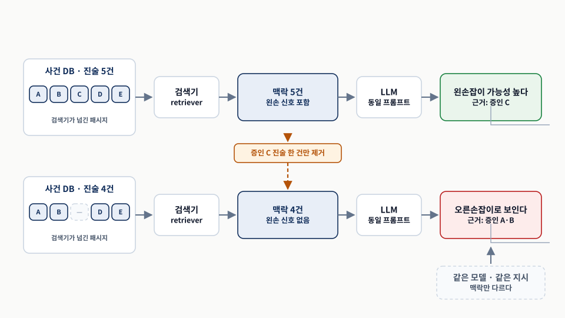
두 줄을 나란히 읽고 맨 오른쪽 결론만 비교한다. 바뀐 것은 가운데 맥락 한 건뿐이다. 원본 좌표 14.1 「RAG 시스템의 한계.」의 논리를 다시 배치했다.이 실패를 “모델이 멍청해졌다”로 읽으면 고칠 곳을 찾지 못한다. 모델은 두 번 다 주어진 조각으로 최선을 다해 추론했다. 조각이 불완전했을 뿐이다. 그래서 저자들이 끌어내는 결론은 모델에 대한 것이 아니라 구조에 대한 것이다. 출력의 품질은 모델이 자기 답에 얼마나 확신하든 상관없이 오직 검색 단계의 품질만큼만 좋다.
이어서 저자들은 RAG가 잘 맞는 조건과 그 조건이 깨지는 방식을 짚는다. RAG는 정보 출처를 세밀하고 독립적인 패시지(passage)로 쪼갤 수 있을 때 잘 작동한다. 관련성 높은 작은 블록이 많으면, 그중 맞는 것을 골라 맥락을 구성할 수 있다. 그런데 실제로는 답이 여러 문서에 걸쳐 있는 경우가 많고 검색이 그것들을 다 잡지 못한다. 또 어떤 문서는 찾는 답을 담고 있지 않으면서도 여전히 관련이 있다. 패시지의 세밀함 수준이 맞지 않거나 검색기가 관련성을 정확히 재지 못하면 맥락은 파편화되고, 파편화된 맥락은 모델을 잘못된 가정으로 밀어 그럴듯하지만 부정확한 세부 사항을 만들게 한다.
이 실패는 프롬프트 수정으로 막히지 않는다. 모델에게 “근거가 부족하면 모른다고 답하라”고 지시해도, 증인 A·B의 오른손 단서는 실제로 존재하는 근거이므로 모델이 근거 부족을 선언할 이유가 없다. 손잡이 판정에 필요한 진술이 전부 다 왔는지는 맥락 안에서는 판정할 수 없는 성질이다.
따라서 고칠 수 있는 자리는 검색기 하나다. 그리고 검색기가 완전성을 보장할 수 없다면, 남는 선택은 검색 자체를 “관련성 점수로 고르기”에서 “구조를 따라 빠짐없이 걷기”로 바꾸는 것이다. 이것이 다음 절이 정형 질의로 넘어가는 이유다. MATCH (c:Crime {case_no:'CASE123'})<-[:WITNESSED]-(w:Person)는 관련성을 추측하지 않고 연결된 증인을 전부 돌려준다.
14.3 지식 그래프 질의를 위한 스키마 기반 접근 — 전문가라면 무엇을 할까
- 전문가 집단에게 RAG식 제약을 강제하면 전문성이 원래 요구했을 깊이와 엄밀함이 사라진다.
- 전문가의 첫 단계는 스키마, 즉 그래프의 청사진을 이해하는 것이다.
- 스키마를 알면 구체적 요청을 정밀한 순회로 바꿀 수 있고, 거기에 제약을 걸어 다듬을 수 있다.
문제의 규모를 줄여 사고 실험을 해 보자. 수백만 문서가 아니라 열두어 개 문서만 있고, 도메인 전문가 집단에게 질문을 던지되 “사람의 힘으로 하는 RAG” 방식으로만 답하라고 제약을 건다. 먼저 문서를 훑으며 비슷한 내용이나 같은 도메인의 문단에 표시를 하고, 그중 가장 관련성 높은 열두어 개를 골라 맥락으로 삼는다. 맥락을 확보한 뒤에는 나머지를 전부 옆으로 치워 두고, 고른 조각과 상식만으로, 필요하면 가정까지 하면서 답한다.
이 과정은 그다지 인상적이지 않다. 이들이 도메인 전문가임에도, RAG식 제약 안에서 일하도록 강요당하면 진짜 전문성이 원래 요구했을 깊이와 엄밀함을 잃어버린다. 전문가가 잘하는 것은 “고른 조각으로 추론하기”가 아니라 “어디를 봐야 하는지 아는 것”이기 때문이다.
그러면 제약을 풀었을 때 전문가는 실제로 무엇을 할까. 첫 단계는 스키마(schema), 즉 그래프의 청사진을 이해하는 것이다. 질문이 사람과 관련된 것이라면 Person 라벨이 붙은 노드를 다루게 될 가능성이 높다. 이 사전 지식이 있으면 “이 지역에서 그 시간에 목격된 빨간 카마로를 보여 줘” 같은 구체적 요청을 정밀한 순회(traversal)로 바꿀 수 있다. 저자들이 든 순회의 모양은 사람에서 차, 차에서 자동 번호판 인식 장치로 이어진다. 차를 소유한 사람, 그 차를 포착한 ANPR(자동 번호판 인식, automatic number plate recognition) 카메라가 하나의 경로로 엮인다.
순회를 얻은 다음에는 조건을 걸어 다듬는다. 차가 빨간색이어야 하고, 모델이 카마로여야 하고, 카메라가 특정 지역과 시간대에 있어야 한다. 어느 노드와 관계를 고를지, 어떤 제약을 어떻게 걸지를 안내하는 것이 스키마다. 스키마를 이해하면 전문가는 방대한 데이터 속에서 자신이 찾는 것만 정확히 짚어 내는 정형 질의를 쓸 수 있다.
RAG는 “어느 문서가 관련 있을까”를 추측한다. 스키마 기반 접근은 “어느 길을 걸을까”를 지정한다. 추측은 놓칠 수 있고 놓친 사실이 겉으로 드러나지 않는다. 지정은 틀리면 오류가 나거나 결과가 비므로 틀렸다는 사실이 드러난다. §14.2.2의 실패가 조용했던 이유가 여기에 있다.
14.3.1 그래프 스키마를 이해하고 활용하기 — 도시 지도를 먼저 읽는 것처럼
- 스키마는 데이터 모델러가 도메인을 구조화해 해석한 결과물이다. 도시를 돌기 전에 그 도시의 배치를 읽는 것과 같다.
- 변환은 세 단계다. 요청을 의미 구성 요소로 분해하고, 그것을 스키마 요소에 매핑하고, 순회 패턴과 제약으로 질의를 구성한다.
- 제약 순회는 어떤 복잡도의 정형 질의든 그것을 구성하는 근본 빌딩 블록이다.
그래프 스키마를 이해하는 일은 도시를 돌아다니기 전에 배치를 먼저 파악하는 것과 같다. 어떤 유형의 정보가 어디에 저장되어 있고 서로 어떻게 연결되어 있는지를 알게 된다. 비유가 맞지 않는 지점도 있다. 도시의 배치는 하나지만 스키마는 해석이다. 같은 경찰 도메인을 다른 모델러가 짜면 노드와 관계가 달라진다. 그래서 스키마를 읽는 일은 지형을 외우는 일이 아니라 “이 모델러는 사건과 사람의 관계를 어느 쪽으로 걸었는가”를 읽는 일에 가깝다.
“이 지역에서 그 시간에 목격된 빨간 카마로를 보여 줘”를 받았을 때 첫 단계는 질의에 언급된 개념을 스키마의 노드와 관계에 매핑하는 것이다. 여기에는 세 가지를 식별하는 일이 들어간다. 엔티티 — “빨간 카마로”는 Color와 Model 같은 속성을 가진 Car 라벨의 노드에 매핑된다. 관계 — 이 질의는 “Person이 Car를 소유한다”, “Car가 ANPRCamera에 포착된다” 같은 관계를 함축한다. 제약 — 색이 빨강이어야 하고, 모델이 카마로여야 하며, 카메라가 지정된 지역에 있어야 한다(표 3).
| 의미 조각 | 스키마 좌표 | 질의에서의 모양 | 이 조각을 놓치면 |
|---|---|---|---|
| 빨강 | Vehicle.color | v.color = 'RED' | 모든 카마로가 색과 무관하게 나온다. |
| 카마로 | Vehicle.model | v.model = 'CAMARO' | 모든 빨간 차가 모델과 무관하게 나온다. |
| 이 지역 | ANPRCamera의 위치 속성 | 카메라 위치에 대한 비교 | 전 지역의 포착 기록이 섞인다. |
| 그 시간 | ANPRCameraEvent.timestamp | STARTS WITH 로 날짜 접두 비교 | 전 기간의 포착 기록이 섞인다. |
| 목격됨 | PLATE_READ_EVENT · HAS_EVENT 두 관계 | MATCH path = ... 한 패턴 | 차와 카메라가 이어지지 않아 ‘어디서 목격되었나’에 답할 수 없다. |
이 결과가 제약 순회(constrained traversal)다. “특정한 방식으로 연결된 이 모든 엔티티 중에서, 내가 관심 있는 특성을 지닌 것은 어느 것인가?”라는 질문에 답한다. 순회가 그래프 위를 어떤 길로 걸어갈지를 정하고, 제약이 그 길 위에서 어떤 대상만 골라 담을지를 정한다. 둘이 합쳐질 때 비로소 “빨간색이면서 카마로이고 그 시간 그 지역 카메라에 잡힌 차”라는 정밀한 답이 나온다(그림 2).
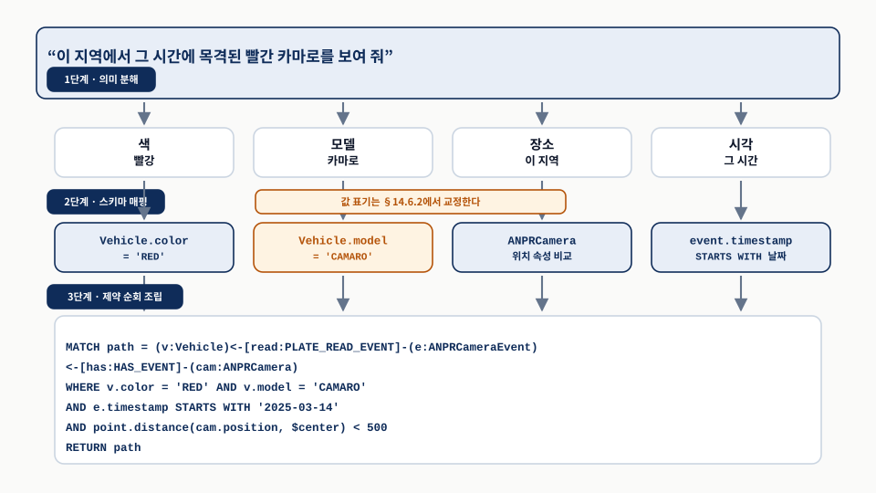
세 단계를 위에서 아래로 따라 읽는다. 2단계의 값 표기는 스키마만 읽어 얻은 형태이므로 §14.6.2에서 교정된다. 카메라 위치 조건의 속성 이름은 그래프마다 다르므로 예시로 두었고, 관계 이름과 timestamp 조건의 형태는 저자들의 공개 구현에 실린 예시 질의를 따랐다. 원본 좌표 14.2 「자연어 질의("이 지역에서 이 시간에 목격된 빨간 카마로")를 정형 Cypher 질의로 옮기기.」의 논리를 다시 배치했다.제약 순회가 “근본 빌딩 블록”이라는 말은 조합이 된다는 뜻이다. 하나의 제약 순회로 시작해 필요하면 집계까지 곁들여 특정 노드나 하위 그래프를 식별하고, 그것들을 다음 단계에서 더 깊이 탐색할 출발점으로 삼을 수 있다. 여러 겹의 탐색과 정교화가 필요한 복잡한 질문도 이 조합으로 대응한다. 궁극적으로 제약 순회는 자연어의 의도를 그래프 데이터베이스가 실행할 수 있는 구조화된 질의로 옮겨, 사람의 언어와 기계가 읽을 수 있는 데이터 사이의 간극을 메운다.
“순회”와 “제약”은 설명을 위한 비유가 아니라 Cypher 문법의 두 절에 그대로 대응한다. MATCH가 순회 패턴을, WHERE가 제약을 맡는다. 그래서 §14.7의 프롬프트는 이 둘을 따로 지시할 수 있다. 출력 형식이 그래프일 때는 MATCH 패턴의 모양에 개입해 “관계에 이름을 붙이고 여러 순회를 한 패턴으로 모으라”고 요구하고, 표일 때는 RETURN에 개입해 속성을 골라 이름을 바꾸라고 요구한다.
본문의 라벨 표기와 도해의 라벨 표기가 다른 점도 짚어 둔다. 원문 본문은 사람과 차의 관계를 Car, Owns_car, Captured_by로 적고, 교재 그림 14.2의 캡션은 같은 대상을 Vehicle, CameraEvent, ANPRCamera로 적는다. 이 리포트는 저자들의 공개 구현이 실제로 쓰는 Vehicle 계열 이름을 따랐다.
14.4 전문가처럼 생각하기 — 향상된 질의를 위한 메타데이터 활용
- 전문가의 추론은 사람만의 영역이 아니다. LLM이 수행할 수 있는 일련의 작업으로 옮길 수 있다.
- 이 장의 나머지는 네 단계를 차례로 다룬다. 의도 이해(14.5), 메타데이터 추출과 활용(14.6), 추론 기법(14.7), 요약 통합(14.8).
- 초점이 ‘답을 생성하기’에서 ‘올바른 질문을 정식화하기’로 옮겨 간다.
앞 절에서 본 전문가의 절차 — 스키마를 이해하고, 순회를 정하고, 제약을 건다 — 는 제약 순회에 뿌리를 둔 청사진이다. 그런데 이 절차는 사람 전문가만의 영역이 아니다. 방대한 텍스트로 학습된 LLM은 패턴을 인식하고 전문가의 추론과 매우 닮은 추론을 해낼 수 있다. 스키마를 파싱하고 해석하며, 서로 다른 엔티티와 관계가 어떻게 얽혀 있는지 이해하고, 그 이해를 자신의 추론 과정에 활용할 수 있다. 추론과 스키마 이해가 결합되면 더 정확하고 맥락에 맞는 질의가 나온다.
이 장의 나머지는 그 옮기는 작업을 네 단계로 나눠 다룬다. 먼저 질문 뒤에 숨은 의도(intent)를 어떻게 이해할지 다루고(§14.5), 다음으로 메타데이터 — 풍부해지거나 주석이 달린 스키마 — 를 어떻게 추출하고 활용할지 다룬다(§14.6). 이어서 LLM에서 전문가의 추론을 흉내 내는 기법을 살펴보고(§14.7), 답의 가장 중요한 부분을 부각하는 요약 단계를 어떻게 통합할지 설명한다(§14.8). 이 네 단계가 실제로 어떻게 맞물리는지는 그림 3이 한눈에 보여 준다.
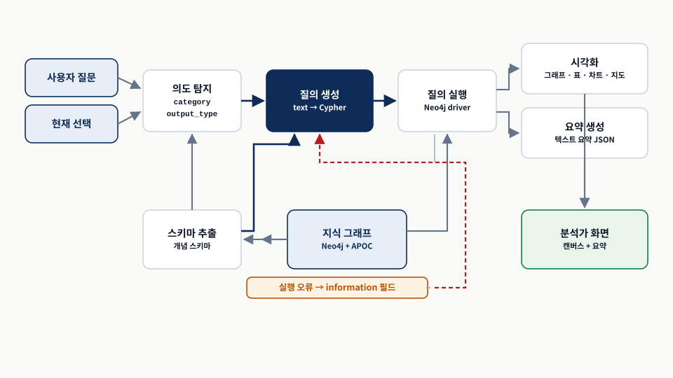
질의 생성에서 아래로 내려가 질의 실행을 거치고, 실패하면 붉은 점선을 따라 질의 생성으로 되돌아온다. 되돌림은 실행 오류 한 경로뿐이다. 원본 좌표 14.3 「시스템 개요.」의 배치를 따르고, 원본에 따로 그리지 않은 지식 그래프를 더했다.도해에서 눈여겨볼 곳은 두 군데다. 첫째, 그래프를 읽는 화살표가 둘뿐이다. 스키마 추출은 구조를 읽고, 질의 실행은 데이터를 읽는다. 나머지 네 구성 요소는 그래프에 닿지 않는다. 둘째, 되돌아오는 화살표가 하나뿐이다. 질의 실행이 실패하면 오류가 질의 생성으로 되돌아간다. 그 외에는 모두 한 방향이다. 구성 요소별 입력과 출력을 정리하면 표 4가 된다.
| 구성 요소 | 입력 | 출력 | 어긋나면 나타나는 증상 |
|---|---|---|---|
| 의도 탐지 | 질문 텍스트, 현재 선택 | category, subcategory, output_type, reason | 표로 봐야 할 집계 질문이 그래프로 그려진다. |
| 스키마 추출 | 그래프의 구조, 스키마 설정 YAML | 주석이 붙은 스키마 텍스트 | 스키마에 없는 라벨이나 관계를 쓴 질의가 나온다. |
| 질의 생성 | 질문, 의도, 스키마, 선택, 예시, 그래프 주석 | relationships, reasoning, query, success | 실행 오류가 나거나 결과가 빈다. |
| 질의 실행 | 생성된 Cypher 질의 | 레코드 또는 오류 메시지 | 오류 메시지가 질의 생성으로 되돌아가 한 번 더 시도된다. |
| 시각화 | 레코드, output_type | 캔버스 · 표 · 차트 · 지도 | 관계에 이름이 없어 캔버스에 선이 그려지지 않는다. |
| 요약 생성 | 질문, 실행된 질의, 레코드, 선택 | results_analysis, reasoning, summary | 캔버스에 이미 보이는 내용을 문장으로 되풀이한다. |
넘어가기 전에 저자들이 짚는 패러다임 전환 하나를 확인해야 한다. 초점을 “답을 생성하는 것”에서 “올바른 질문을 던지는 것”으로 옮기는 것이다. 전통적인 RAG에서는 질문을 둘러싸고 맥락을 쌓아 올려, 질문과 맥락의 결합으로부터 근거 있는 답을 생성한다. 강조점은 주어진 맥락을 바탕으로 관련성 있고 정확한 답을 어떻게 지어낼지에 있다.
이 장의 접근에서는 초점이 질문을 정형 질의로 변환하는 쪽으로 옮겨 간다. 도전은 질문에 답하는 것이 아니라, 질문을 제대로 정식화해서 그것을 곧바로 지식 그래프에서 사실 데이터를 뽑아내는 데 쓸 수 있게 만드는 것이다. 질의는 본질적으로 “정식화된 질문”이며, 그래프의 구조와 상호작용하도록 설계되어 정밀하고 사실에 맞는 검색을 보장한다.
원문은 실행 오류를 프롬프트에 되넣어 “이후 시도에서 오류 없는 질의를 생성할 수 있다”고만 말하고, 몇 번까지 시도할지는 정하지 않는다. 구현하는 쪽에서 세 가지를 정해야 한다. 재시도 상한, 상한에 걸렸을 때 사용자에게 무엇을 보여 줄지, 그리고 success가 false로 돌아온 경우(스키마로는 질의를 만들 수 없다고 모델이 판단한 경우)를 오류와 구분해 처리할지 여부다.
마지막 항목이 중요하다. success: false는 실행 실패가 아니라 “이 그래프로는 답할 수 없다”는 판정이므로, 되돌려 다시 시도해도 같은 답이 나온다. 재시도 대상은 실행 오류뿐이다.
14.5 의도 탐지 — 사용자의 기대를 이해하기
- “빨간 카마로”의 답을 어떤 모양으로 보여 줄지에 따라 필요한 질의가 달라진다.
- 수사 보드 같은 그래프, 번호판과 포착 시각이 열로 늘어선 표, 카메라 위치를 찍은 지도가 모두 가능한 답이다.
- 이 단계를 맨 앞에 두는 이유는 셋이다. 전문가의 첫걸음이고, 의미 이해는 LLM이 잘하며, 단순해서 추적과 디버깅이 쉽다.
의도를 왜 알아야 하는지는 “빨간 카마로” 예시로 돌아가면 드러난다. 그 답을 사용자에게 어떻게 보여 줄 것인가. 한 가지 선택지는 범죄 영화에 나오는 수사 보드를 만들어 노드와 관계를 얹는 것이다. 이 경우 차를 나타내는 노드뿐 아니라 각 차량을 탐지한 ANPR 카메라로의 연결까지 포함해야 한다. 다른 방법은 번호판·카메라 위치·포착 시각과 함께 차 목록을 돌려주는 표다. 또 다른 선택지는 지도이고, 이는 카메라 노드의 위치가 필요하다. 제시 방법마다 장점이 있고, 무엇이 맞는지는 사용자의 필요와 선호에 따라 달라진다.
적절한 제시 유형과 올바른 파이프라인을 고르려면 사용자의 의도를 이해해야 한다(그림 4).
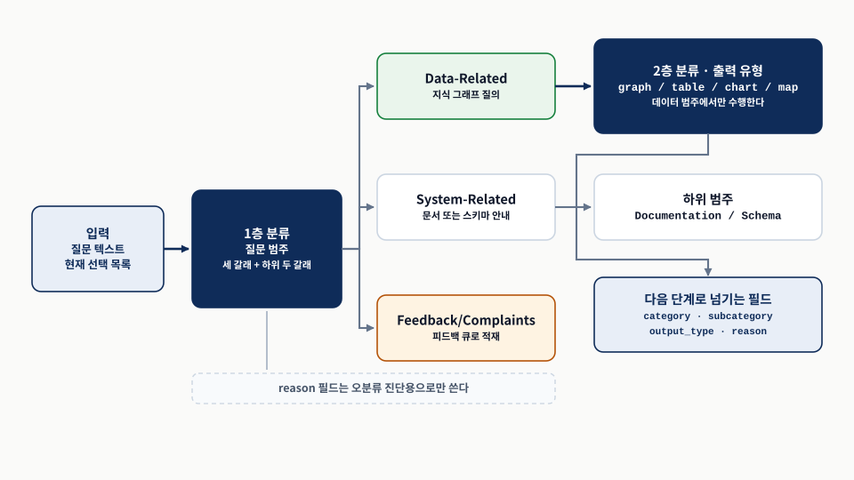
왼쪽에서 오른쪽으로 읽되, 2층 분류로 올라가는 화살표가 데이터 갈래 하나에서만 나온다는 점을 본다. 원본 좌표 14.4 「의도 탐지 구성 요소는 사용자 입력을 분석해 사용자의 질문을 어떻게 적절히 다루고 분류할지 결정합니다.」의 논리를 다시 배치했다.이 단계를 맨 처음에 수행하는 데는 몇 가지 이유가 있다. 첫째, 질문 뒤에 숨은 의도를 이해하는 것은 모든 전문가가 만족스러운 답을 주기 위해 밟는 근본적인 첫걸음이다. 전문가의 추론을 흉내 내려는 것이니 순서도 따라야 한다. 둘째, 이 분류 단계는 의미 이해에 기대는데, 이는 LLM이 아주 잘하는 작업이다. 셋째, 비교적 간단한 작업이라서 따라가고 디버깅하기 쉽고, 그래서 시스템의 탄탄한 토대가 되어 준다.
세 제시 방법은 화면만 다른 것이 아니라 필요한 질의가 다르다. 그래프로 보여 주려면 차와 카메라를 잇는 관계까지 결과에 담아야 하고, 표로 보여 주려면 노드 전체가 아니라 열에 넣을 속성을 골라야 하고, 지도로 보여 주려면 카메라의 위치 속성이 결과에 있어야 한다.
즉 output_type은 화면 렌더링의 입력이 아니라 질의 생성의 입력이다. 이것이 의도 탐지가 파이프라인의 첫 단계인 이유다. 뒤로 미루면 이미 만들어진 질의를 다시 만들어야 한다.
14.5.1 시각화 유형으로 분류하기 — 그래프·표·차트·지도
- 분류기를 만들려면 클래스 집합을 먼저 정해야 한다. 이 집합은 고정된 것이 아니라 운영하며 추가하거나 합친다.
- 프런트엔드가 제시할 수 있는 네 형식이 그대로 클래스가 된다. 그래프, 표, 차트, 지도다.
- 프롬프트는 작업 정의, 퓨샷, 실제 질문의 세 부분으로 나뉜다.
graph쪽으로 명확한 편향을 넣는다.
질의 응답 시스템이 데이터를 공급하는 프런트엔드가 네 가지를 제시할 수 있다고 하자. 노드와 관계가 배치된 대화형 캔버스로서의 그래프, 기본 정렬과 검색 기능을 갖춘 표, 차트나 플롯, 그리고 GIS(지리 정보 시스템, geographic information system) 같은 환경의 대화형 지도다. 이 네 가지가 사용자 의도와 시스템의 시각화 역량 사이에 명확한 매핑을 만들고, 그 매핑이 의도 탐지 접근의 토대가 된다(그림 5).
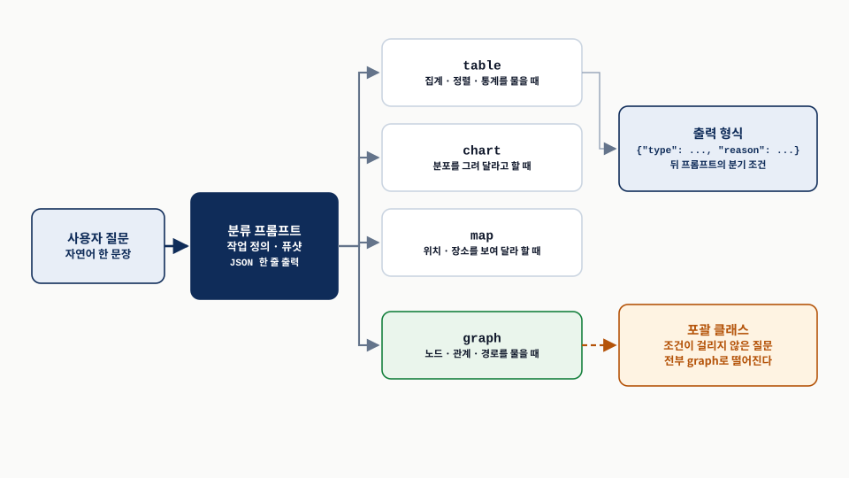
네 갈래의 선택 조건을 위에서 아래로 읽고, 맨 아래 갈래가 나머지 전부를 받는다는 점을 본다. 원본 좌표 14.5 「데이터 시각화 요청을 위한 의도 탐지 시스템 아키텍처.」의 논리를 다시 배치했다.클래스 집합이 “돌에 새긴 듯 고정된 것이 아니”라는 단서는 그냥 하는 말이 아니다. 운영하면서 클래스를 추가하거나 합치며 다시 손볼 수 있다는 전제가 있어야, 뒤에 나오는 “오분류를 관찰해 퓨샷을 채운다”는 방법이 성립한다.
좋은 분류 프롬프트가 갖춰야 할 성질을 저자들은 여섯 가지로 든다. 명확한 지시, 정의된 범주, 예시, 경계 사례, 기대 출력 형식, 폴백 옵션이다. 각각이 이 프롬프트의 어디에 놓였는지 대조하면 표 5가 된다.
| 요건 | 이 프롬프트에서의 자리 | 빠지면 생기는 일 |
|---|---|---|
| 명확한 지시 | 첫 문장이 작업을 진술한다. 삼중 백틱으로 구분된 텍스트가 사용자 질문임을 알린다. | 모델이 무엇을 고르는 일인지 헷갈린다. |
| 정의된 범주 | 네 값을 목록으로 못박고, 각 값을 고를 조건을 값마다 따로 적는다. | 목록에 없는 값이 나와 뒤 단계의 분기가 깨진다. |
| 예시 | 법 집행 도메인의 퓨샷 네 건. 각 예시가 질문과 기대 출력을 함께 보인다. | 출력 모양을 설명으로만 배우게 되어 서식이 흔들린다. |
| 경계 사례 | 운영 중 관찰한 오분류를 퓨샷에 추가해 채운다. | 경계에 걸린 질문의 판정이 실행마다 달라진다. |
| 기대 출력 형식 | JSON으로만 답하고 결과를 설명하지 말라는 지시. 퓨샷의 실제 JSON이 형식을 보여 준다. | 설명 문장이 섞여 파싱이 깨진다. |
| 폴백 옵션 | “앞의 경우들로 출력을 이해하지 못하면 graph” 한 줄. | 억지스럽거나 잘못된 분류가 나온다. |
프롬프트의 판정 규칙은 기본값을 graph로 두고, 나머지 세 값에 각자의 조건을 붙이는 모양이다. 사용자가 경로·노드·관계 같은 그래프 요소를 요청하면 어떤 경우든 graph다. 출력 유형이 명시적이지 않으면 보통 graph이고, 그 위에 예외를 얹는다. table은 사용자가 집계·정렬·통계를 물을 때만, chart는 분포의 플롯을 요청할 때, map은 위치·장소 또는 강한 위치 속성을 지닌 엔티티를 보여 달라고 할 때다. 앞의 경우들로 출력을 이해하지 못하면 다시 graph다.
저자들이 공개한 15장 애플리케이션의 의도 탐지 템플릿에서 이 규칙 부분은 다음 모양으로 실려 있다.
If the output type is not explicit it is usually graph:
- "table", only when the user asks about aggregation, ordering, and statistics;
- "chart", if the users asks for plotting distributions;
- "map", if the user asks for showing locations, places or other entities
with a strong location property;
If you do not understand the output from previous cases the output should be "graph".프롬프트는 세 부분으로 나뉜다. 작업 정의는 첫 문장이 작업을 일반적으로 정의하고 뒤이은 문장들이 세부를 더한다. graph 쪽으로 명확한 편향을 도입한 다음 각 클래스에 대한 기대를 서술한다. 퓨샷 섹션은 기대 응답까지 포함한 예시 모음을 제공한다. 출력 구조가 단순해서 설명하기보다 보여 주는 편이 쉬우므로 응답 형식도 여기서 함께 정의한다. 예시는 법 집행 도메인 맥락에 있고, 응답에는 답 외에 추론 단계도 들어간다. 실제 질문은 마지막에 퓨샷과 같은 형식으로 삽입된다.
이 프롬프트로 얻은 판정 실례를 모으면 표 6과 같다.
| 질문 | type | 모델이 댄 이유 | 걸린 조건 |
|---|---|---|---|
| 가장 최근의 총격 사건 위치는 어디인가? | map | 위치를 보여 주는 것이 관련된다. | 위치 · 장소 |
| 2020년에 월별로 저질러진 범죄는 2019년과 비교해 몇 건인가? | chart | 분포는 플롯할 수 있다. | 분포의 플롯 |
| 최근 연쇄 절도 사건의 주요 용의자는 누구인가? | graph | 엔티티와 관계가 함축된다. | 노드 · 관계 · 경로 |
| 작년 교통 사망 사고는 그 전 해와 비교해 몇 건인가? | table | 집계가 요청되었다. | 집계 · 정렬 · 통계 |
출력 JSON에 reason 필드가 왜 있는지는 짚어 둘 만하다. 저자들은 지금으로서는 이 필드를 다운스트림 처리에 쓸 계획이 없고 디버깅에만 쓰겠다고 밝힌다. 다만 추가 토큰을 생성하는 것이 LLM의 전체 응답에 어떤 영향을 주는지는 뒤의 §14.7에서 따로 다룬다.
한 걸음 더 나아가 경계 사례와 폴백을 보자. 경계에 놓인 고품질 샘플을 얻는 가장 쉬운 방법은 정상 사용 중에 벌어지는 오분류를 관찰하는 것이다. 예를 들어 “인신매매에 연루된 조직 범죄의 가장 흔한 유형은 무엇인가?”를 보자. 이 질문은 한편으로 조직 범죄 집단의 네트워크라는 엔티티와 관계의 시각적 표현을 함축하고, 다른 한편으로 “흔한 유형”을 물으니 어느 정도의 집계와 요약을 시사한다. 저자들이 프롬프트를 돌렸을 때 시스템은 이 질문을 graph로 분류했다. 조직 범죄 유형과 인신매매 사이의 관계가 흔한 유형을 나열하는 것보다 더 중요했기 때문이다.
중요한 것은 저자들이 이 판정을 정답으로 주장하지 않는다는 점이다. “딱 잘라 결론지을 수 있는 분류가 아니며, 하나의 옳고 논란의 여지 없는 답이 있는 것이 아니다.” 그래서 바로 이런 질문을 퓨샷에 넣는다. 시스템의 미묘한 동작을 다듬어 주기 때문이다.
폴백에 대해서는 재량을 발휘해 graph 쪽으로 상당한 편향을 넣었고, 이것이 사실상 포괄(catch-all) 클래스 역할을 한다. 어쨌든 질의 대상이 그래프 데이터베이스이니 합리적인 선택이다.
저자들의 공개 구현에서 이 프롬프트는 마지막 두 줄이 ###Text:와 ###Output: 구분자로 되어 있고, 질문은 삼중 백틱으로 감싸 ###Text: 뒤에 들어간다. 출력 지시에는 원문 본문에 없는 조건이 하나 더 붙어 있다. 코드 블록을 쓰지 말라는 것이다.
사소해 보이지만 파싱과 직결된다. 많은 모델이 JSON을 요청받으면 세 개의 백틱과 json 언어 표지로 감싸 돌려준다. 그 상태로 json.loads에 넣으면 예외가 난다. 본문의 여섯 요건 가운데 “기대 출력 형식”을 실제로 만족시키려면 이 한 줄이 필요하다.
14.5.2 데이터 질문인가, 문서 질문인가, 아니면 그저 불평인가?
- 비기술 사용자는 데이터 질문만 던지지 않는다. 기능에 대한 도움, 설명 요청, 피드백도 함께 온다.
- 질문을 세 범주로 묶고, 시스템 관련은 문서 관련과 스키마 관련으로 한 번 더 나눈다.
reason필드가 오분류의 원인을 드러낸다. 작은 모델의 오분류는 작업 정의를 보강하라는 신호다.
비기술 도메인 전문가에게 그래프를 열어 주면, 들어오는 질문의 폭이 넓어진다. 저자들이 든 예시는 이런 것들이다. “시스템에서 데이터를 CSV 파일로 내보낼 수 있나요?” “용의자와 관련된 위험 수준을 평가하려면 이 시스템을 어떻게 사용하나요?” “시스템이 너무 느리고 자꾸 멈춥니다. 어떻게 해결할 수 있나요?” “시스템에 기능 XYZ가 있으면 정말 좋겠어요. 추가할 수 있나요?”
이런 질문들은 정당한 만큼이나 예상 밖이다. 지식 그래프에 직접 질의하는 것과는 무관할 수 있지만 실제 사용자의 필요와 기대를 반영한다. 이 폭을 세 범주로 묶으면 Data-Related, System-Related, Feedback/Complaints가 되고, 시스템 관련 안에서 Documentation-Related와 Schema-Related를 더 구분한다(표 7).
| 범주 | 판정 기준 | 처리 경로 |
|---|---|---|
Data-Related | 답하려면 시스템 내 데이터에 대한 직접 접근이나 지식이 필요하다. 데이터 자체의 내용과 구조에 초점이 있다. | 시각화 형식 분류를 거쳐 질의 생성으로 간다. |
System-Related › Documentation-Related | 시스템 문서, 사용자 매뉴얼, 도움말 섹션을 참조해 답할 수 있다. | 문서 쪽으로 라우팅한다. |
System-Related › Schema-Related | 지식 그래프의 구조 또는 그래프 데이터 스키마와 관련된 기술적 질문이다. | 스키마 쪽으로 라우팅한다. |
Feedback/Complaints | 시스템으로 답할 수 없거나, 사용자의 피드백 또는 불평이다. | 불평과 개선 요청을 위한 별도 범주로 남긴다. |
범주를 이렇게 나누면 라우팅이 정해진다(그림 6).
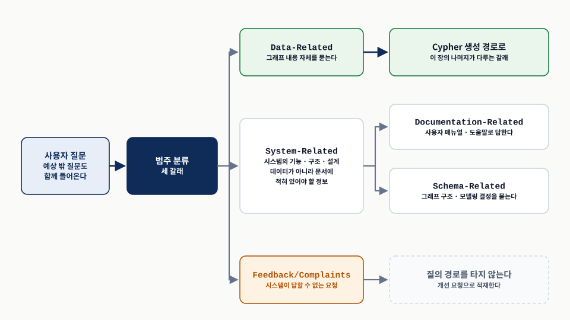
세 갈래를 먼저 보고, 가운데 갈래에서만 한 번 더 갈라지는 두 화살표를 본다. 원본 좌표 14.6 「의도 탐지 시스템에서 시스템 관련 질문의 분류.」의 논리를 다시 배치했다.이 분류 프롬프트도 작업 정의, 퓨샷, 실제 질문의 세 부분이다. 작업 정의는 세 범주를 번호 붙여 정의하고, “System-Related로 분류하면 다음 하위 범주 중 하나로 더 분류하라”는 조건을 덧붙인다. 퓨샷은 질문마다 question, category, 필요하면 subcategory, 그리고 reason을 담은 JSON을 짝지어 보인다. 시각화 분류와 다른 점은 출력 형식에 reason 필드가 명시적으로 들어간다는 것이다. 잠재적 오분류를 식별하고 모델의 추론을 이해하는 데 이 필드가 쓰인다.
그 쓸모를 보여 주는 사례가 하나 실려 있다. “지식 그래프는 최신 정보를 반영하기 위해 얼마나 자주 갱신되나요?”를 물었을 때, 더 작거나 양자화된 LLM은 Data-Related로 분류하며 “데이터 자체 내에서의 갱신 빈도에 관한 것”이라고 이유를 댔다. 완전한 규모의 LLM은 System-Related 아래 Documentation-Related로 분류하며 “문서화될 시스템 관련 기능”이라고 했다.
어느 쪽이 맞는지는 데이터로 답할 수 있는지를 따지면 갈린다. 노드의 생성이나 갱신 타임스탬프를 분석해 갱신 빈도를 추론하는 것은 가능하다. 그러나 저자들은 이 접근이 법 집행 지식 관리 시스템에는 적절하지 않다고 본다. 데이터는 갱신이 어떻게 예정되어 있는지가 아니라, 정보가 우연히 어떻게 입력되었는지를 반영할 수도 있기 때문이다. 즉 “얼마나 자주 갱신되나”는 운영 규칙에 관한 물음이고, 운영 규칙은 데이터가 아니라 문서에 적혀 있다.
두 경우 모두 reason 필드의 내용이 값진 통찰을 준다. 작은 모델의 이유는 그 모델에게 맥락이 부족함을 시사한다. 이는 작업 정의 섹션에 관련 배경 정보를 넣어 모델을 올바른 분류로 이끌도록 보강해야 함을 알려 주는 신호다. 프롬프트를 고칠 자리를 reason이 가리켜 준 것이다.
분류 프롬프트를 위한 설계 고려 사항 — 하나의 넓은 프롬프트 vs. 다단계 접근
의도 탐지 프롬프트를 설계할 때 하나의 넓은 프롬프트와 다단계 분류 사이의 트레이드오프를 저울질하는 일은 필수이며, 이 고려는 분류 작업 전반에 적용된다(표 8).
| 기준 | 하나의 넓은 프롬프트 | 다단계 분류 |
|---|---|---|
| 우선하는 가치 | 단순함과 관리 부담 감소. | 분류의 정확도와 유연성. |
| 적합한 상황 | 더 복잡한 작업에서도 모델의 정확도가 받아들일 만할 때. 신속한 배포가 필요한 환경. | 질문을 범주화하는 방식에 잦은 조정이 예상될 때. 복잡한 질문과 엣지 케이스가 많을 때. |
| 얻는 것 | 더 빠른 구현과 더 쉬운 유지보수. | 단계마다 특정 요구에 맞춰 다듬을 수 있어 더 견고하고 신뢰할 만한 결과. |
| 저자들의 권고 | 하나로 시작해 단순함을 유지하면서 실전에서 효과를 평가한다. | 요청의 복잡도가 커지거나 새 요구가 나타나면 전환한다. 미루는 동안 실제 예시가 모인다. |
저자들의 권고는 순서가 있다. 하나의 더 넓은 프롬프트로 시작하면 단순함을 유지하면서도 그 프롬프트의 효과를 실전에서 평가할 수 있다. 요청의 복잡도가 커지거나 새로운 요구가 나타나면 다단계로 전환하는 것을 고려한다. 그리고 쪼개는 결정을 미루면 실제 세계의 예시를 모을 기회도 얻게 되어, 결국 채택될 다단계 접근이 애플리케이션의 구체적 필요에 맞춰지도록 보장해 준다.
저자들이 공개한 15장 애플리케이션의 프롬프트 템플릿은 셋이다. 의도 탐지, 텍스트 → Cypher, 요약 생성이다. 그중 의도 탐지 템플릿은 §14.5.1의 네 형식 분류만 담고 있고, 이 절의 세 범주 분류는 들어 있지 않다.
따라서 이 절은 “실린 구현의 설명”이 아니라 설계 확장 제안으로 읽는 것이 맞다. 15장의 애플리케이션은 들어오는 질문이 모두 데이터 질문이라고 가정한다. 이 절을 구현에 붙이려면 두 분류기의 순서를 정하고(범주가 먼저, 형식이 다음), 데이터 범주가 아닐 때 태울 두 개의 경로 — 문서 검색과 스키마 설명 — 를 새로 만들어야 한다. 위의 트레이드오프 표가 “하나로 시작하라”고 권하는 이유이기도 하다.
14.6 스키마에서 LLM이 쓸 수 있는 맥락으로
- 이 절은 파이프라인의 스키마 추출 단계를 다룬다. 원시 스키마를 LLM이 처리할 수 있는 형식으로 바꾸는 일이다.
- 메타데이터, 즉 풍부해진 스키마 정보가 LLM으로 하여금 전문가의 추론을 재현하게 한다.
- 풍부화의 기준은 단순하다. 스키마를 전문가에게 더 이해하기 쉽거나 더 실행하기 좋게 만드는 것이면 LLM도 활용할 수 있다.
앞 절에서 전문가가 스키마를 먼저 읽는다는 것을 확인했다. 그러면 LLM에게 스키마를 어떻게 건네줄 것인가. 이 질문이 파이프라인의 스키마 추출(schema extraction) 단계를 만든다. 이 단계는 원시 스키마 정보를 LLM이 효과적으로 처리하고 이해할 수 있는 형식으로 바꾸는 토대를 이룬다(그림 7).
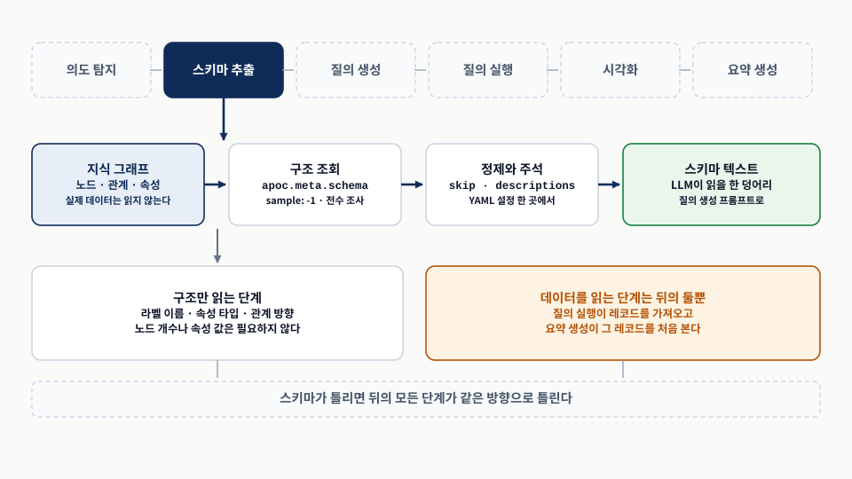
위 띠에서 이번 절의 위치를 확인하고, 아래 네 상자를 왼쪽에서 오른쪽으로 읽는다. 원본 좌표 14.7 「스키마 처리 파이프라인.」의 논리를 다시 배치했다.이 토대 위에 얹는 것이 메타데이터, 즉 스키마 정보의 풍부해진 계층이다. 풍부화의 기준을 저자들은 한 줄로 정한다. 전문가에게 유익할 법한 것이면 무엇이든이다. 스키마를 전문가에게 더 이해하기 쉽거나 더 실행하기 좋게 만드는 것이라면, LLM도 같은 것을 활용할 수 있다는 논리다. 이 기준이 뒤의 §14.6.2에서 “전문가의 치트 시트”라는 구체적인 형태로 돌아온다.
14.6.1 스키마 추출과 표현 — 기술 스키마에서 개념 스키마로
apoc.meta.schema한 번 호출로 될 것처럼 보이지만, 그것이 주는 것은 기술 데이터베이스 스키마다.- 필요한 것은 개념 스키마다. 도메인의 본질적 모델을 전달하는 엔티티와 관계만 담은 정제된 구조다.
- 표현 형식에도 선택이 있다. 서사형은 사람에게 유용하고, LLM 친화적 형식은 Cypher 문법을 그대로 쓴다.
과제는 지식 그래프에서 스키마를 추출해 언어 모델이 처리할 수 있는 형태로 바꾸는 것이다. 언뜻 보면 apoc.meta.schema 함수 호출로 풀리는 문제처럼 보인다. 이 함수는 그래프의 현재 구조를 바탕으로 스키마를 계산한다.
Listing 14.2 apoc.meta.schema의 응답 형식
각 라벨마다 속성 이름·타입·필수 여부·유일성이 딸려 오고, 그 라벨에서 나가는 관계 목록이 붙는다. 자세히 보면 우리 목적과 무관한 세부가 많다는 점이 이 절의 출발이다.
[
{
"label": "[LabelName]",
"properties": {
"[PropertyName1]": {
"type": "[PropertyType1]",
"mandatory": [true|false],
"unique": [true|false]
},
"[PropertyName2]": { ... },
"relationships": [
{
"type": "[RelationshipType]",
"target": "[TargetLabelName]",
"properties": { ... }
}
]
}
}
]교정 — 인쇄된 이 스켈레톤은 relationships를 properties 안에 넣고 배열로 적는다. 실제 APOC 응답에서 relationships는 properties의 형제이고, 관계 타입 이름을 키로 갖는 맵이며, 각 항목에 direction과 labels가 들어 있다. 저자들의 공개 구현이 응답을 value["relationships"].items()로 순회하고 value["direction"]·value["labels"]를 읽는 것이 그 근거다. 스켈레톤만 보고 파서를 쓰면 맞지 않는다.
그런데 좀 더 들여다보면 이 방법이 주는 것이 기술적인 데이터베이스 스키마임이 드러난다. 여기에는 목적과 무관한 세부가 많다. 헬퍼나 관리용 노드, 기술적 메타데이터 속성, 불필요하거나 중복된 타입 라벨, 사용되지 않는 관계, 사용되지 않는 속성이다. 데이터베이스 관리에는 유용하지만 도메인의 핵심 이해에는 기여하지 못하는 요소들이 스키마를 어지럽힌다(표 9).
| 요소 | 기술 스키마에 있는 이유 | 개념 스키마에서의 처리 |
|---|---|---|
| 도메인 노드 라벨 | 도메인의 본질적 모델을 이룬다. | 남긴다. |
| 헬퍼 · 관리용 노드 | 적재 파이프라인의 중간 산물이거나 운영용이다. | skip.classes로 제거한다. |
| 기술적 메타데이터 속성 | 추출 추적과 감사에 쓴다. | skip.properties로 제거한다. |
| 중복 · 불필요한 타입 라벨 | 구현 편의로 붙었다. | 제거하거나 통합한다. |
| 사용되지 않는 관계 | 과거 모델의 잔재다. | skip.relationships로 제거한다. |
| 속성 타입 | 질의를 쓰려면 알아야 한다. | 남긴다. STRING·DATE 같은 표기로 옮긴다. |
| 관계 방향 | 질의 패턴의 화살표 방향을 정한다. | 남긴다. 방향이 한쪽만 되도록 정리한다. |
필요한 것은 개념 지식 그래프 스키마(conceptual KG schema)다. 도메인의 본질적 모델을 전달하는 엔티티와 관계에만 초점을 맞춘, 정제되고 의미 있는 구조다. 개념 스키마는 기술 스키마의 단순화된 부분집합으로서 기술적 복잡성과 무관한 메타데이터를 벗겨 내고, 전문가가 그래프에 대해 추론할 때 의지하는 논리적 관계와 특성을 포착한다.
저자들은 이 단순화가 중요한 이유를 네 가지로 든다.
- 사람의 추론과의 정렬 — 개념 스키마는 도메인 전문가가 그래프를 이해하는 방식을 반영해, 질문을 그래프 요소에 매핑하기 쉽게 만든다.
- LLM의 인지 부하 감소 — 언어 모델은 초점이 맞고 관련성 높은 데이터를 받을 때 더 효율적이다. 군더더기에 방해받지 않으면 정확한 질의를 생성하는 능력이 커진다.
- 질의 오류 위험 최소화 — 구현에 특화된 요소나 중복 라벨은 모델을 혼란스럽게 해 질의 생성 오류로 이어진다. 개념 스키마는 그 잡음을 제거한다.
- 모델 해석 가능성 향상 — 개념 스키마는 그래프를 더 사람이 읽기 좋은 형태로 제시해, LLM이 텍스트를 해석하도록 학습된 방식과 정렬시킨다.
여기서 저자들이 분명히 해 두는 것이 있다. 원시 출력에서 개념 스키마로 넘어가려면 어느 정도의 사람 개입이 필요하다. 방법은 두 가지다. 개념 모델을 수동으로 서술해 사실상 스키마를 큐레이션하거나, 스킵 리스트(skip list)를 정의해 APOC 결과에서 불필요한 요소를 걸러 기술 스키마를 개념적 핵심으로 정제하는 것이다. 자동화되지 않는 단계가 하나 남는다는 사실은 운영 계획에 반영해야 한다(그림 8).
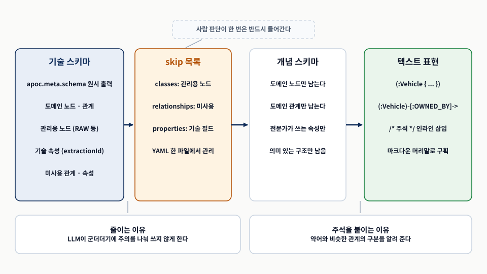
네 칸을 왼쪽에서 오른쪽으로 읽으며 각 칸의 항목 수가 줄어드는 것을 본다. 위쪽 표시가 이 축소에 사람 판단이 한 번 들어간다는 점을 가리킨다. 원본 좌표 14.8 「APOC 호출로 얻은 기술 스키마는 필터링되어 개념 그래프 스키마 표현으로 줄어듭니다.」의 논리를 다시 배치했다.개념 스키마를 얻었다면 다음 선택은 표현 형식이다. 서사형 스키마 표현(narrative schema representation)은 노드와 관계를 자연어로 상세히 서술하고 풍부한 맥락과 예시를 포함한다.
Listing 14.3 서사형 스키마 표현
노드와 관계를 자연어로 상세히 서술하고 예시까지 붙인 형식이다. 철저한 이해가 필요한 사람 독자에게는 유용하다.
**Nodes:**
1. **Vehicle**:
- **Properties**: `color`, `make`, `model`, `style`, `plate_number`
- Node example:
- (:Vehicle
{make: "Toyota", model: "Camry",
style: "Sedan", plate_number: "XYZ123"})
**Relationships:**
1. **OWNED_BY**: 차량과 사람 사이의 소유 관계를 나타냄.
- Example:
(:Vehicle {plate_number: "XYZ123"})
-[:OWNED_BY]->
(:Person {name: "Alice"})문제는 규모다. 스키마가 커질수록 이 형식은 장황해지고 체계성이 떨어진다. 언어 모델에게는, 특히 스키마가 크고 복잡해질 때, 파싱과 이해에 어려움을 안긴다.
반대쪽 선택이 더 LLM 친화적인 형식이다. 스키마를 간결하고 일관된 구조로 정제하여 핵심 엔티티와 관계에 초점을 맞추고, 군더더기 말은 벗겨 내되 본질적 세부는 남긴다.
Listing 14.4 LLM 친화적 스키마 표현 형식
같은 두 요소를 군더더기 말 없이 적은 형식이다. 딱 본질적 구성 요소 — 엔티티 이름, 속성, 관계 — 만 담고 불필요한 서술이나 복잡한 서식을 배제한다.
Nodes:
(:Vehicle {
color: STRING,
make: STRING,
model: STRING,
style: STRING,
plate_number: STRING
})
Relationships:
(:Vehicle)-[:OWNED_BY {since: DATE}]->(:Person)눈여겨볼 점은 이 형식이 Cypher 패턴 문법을 그대로 쓴다는 것이다. (:Vehicle {...})와 (:Vehicle)-[:OWNED_BY]->(:Person)은 모델이 생성해야 할 질의의 문법과 같은 모양이다. 스키마를 읽는 문법과 질의를 쓰는 문법이 같으면, 모델이 해야 할 변환이 한 단계 줄어든다. 속성 타입이 STRING·DATE처럼 남아 있는 것도 중요하다. 날짜 비교를 문자열 비교로 쓸지 판단하는 근거가 된다.
14.6.2 서술적 주석으로 스키마 풍부하게 하기 — 전문가의 "치트 시트" 흉내 내기
- 구조만으로는 부족하다. “검은색”을
color == "black"으로 옮기면, 데이터베이스가BLK를 쓸 때 관련 레코드를 전부 놓친다. - 관계의 모호성도 있다.
COMMITTED와CO_OFFENDS_WITH중 어느 것인지 구조만으로는 판단할 근거가 없다. - 전문가는 문서와 데이터 사전을 읽고 치트 시트를 만든다. 그것을 스키마에 체계적으로 옮긴 것이 주석 스키마다.
스키마 구조만에 의존하면 오히려 방해를 받는다. 사용자가 “범죄에 연루된 모든 검은색 차량을 찾아라”라고 요청했다고 하자. LLM은 “black”이 읽기 쉬운 문자열로 저장되어 있다고 가정하고 이를 순진하게 Vehicle.color == "black"으로 옮길 수 있다. 그런데 데이터베이스가 BLK 같은 약어를 쓰고 있다면, 이 질의는 관련 레코드를 전부 놓쳐 어떤 범죄에도 검은 차가 연루되지 않은 듯한 인상을 준다. 오류가 나지 않고 빈 결과가 나오므로, 사용자는 답이 “없다”고 읽는다.
두 번째 문제는 관계의 모호성이다. 그래프에 COMMITTED와 CO_OFFENDS_WITH가 모두 있다고 하자. “다른 사람과 함께 여러 범죄에 연루된 모든 용의자를 나열하라”는 요청에서, LLM은 어느 관계를 써야 할지 근거가 없다. 직접 연루된 이들(COMMITTED)에 관한 것일까, 공범 이력이 있는 개인들(CO_OFFENDS_WITH)에 관한 것일까. 명확한 구분이 없으면 잘못 선택할 수 있고, 이는 자연어에 본디 있는 모호성을 증폭시켜 사용자로 하여금 자기 요청을 온전히 이해하지 못하는 시스템과 대화하는 듯한 느낌을 남긴다.
이 문제를 다루는 방법은 다시 “전문가라면 무엇을 할까”에서 나온다. 익숙하지 않은 데이터를 마주하면 전문가는 먼저 그래프의 구조에 스스로를 익숙하게 만들며, 이용 가능한 문서와 데이터 사전을 참고한다. 이 검토가 데이터를 관통하는 올바른 경로를 이해하게 해 주고, 정밀하게 제약을 설정하게 하여, 모호하거나 오해된 용어의 함정을 피하게 해 준다.
그 과정의 일부로 전문가는 일종의 치트 시트(cheat sheet)를 만든다. 용어, 약어, 관계의 의미 같은 것들이다. 차량 색상 속성에 “black” 대신 “BLK”가 쓰인다는 것, COMMITTED와 CO_OFFENDS_WITH가 범죄 활동에의 연루를 서로 다른 각도에서 포착한다는 것을 적어 둔다. 이 치트 시트 작성 과정을 스키마에 체계적으로 옮긴 것이 주석 스키마(annotated schema)다.
Listing 14.5 주석 스키마 표현 형식
§14.6.1의 LLM 친화적 형식에 인라인 주석만 얹은 모양이다. 문법은 그대로이고 /* ... */가 끼어든다. 주석은 클래스 자체, 각 속성, 관계, 관계 속성 네 자리에 붙을 수 있다.
Nodes:
/* 여러 사건에 연루되거나 개인이 소유한 차량을 나타냄 */
(:Vehicle {
color: STRING, /* 차량 색상, BLK, GRY, SIL, WHI 등 */
make: STRING, /* 제조사: BMW, BUIC, CADI, CHEV 등 */
model: STRING, /* 차량 모델: IMP, ALT, SON, SEB, CIV 등 */
style: STRING, /* 차체 형태: SUV, SEDAN 등 */
plate_number: STRING /* 차량 번호판 */
})
Relationships:
/* 차량에서 사람으로의 소유 관계, 소유 시작 날짜 포함 */
(:Vehicle)-
[:OWNED_BY {since: DATE /* 소유가 시작된 날짜, ISO 형식 */}]
->(:Person)색상 주석의 BLK, GRY, SIL, WHI가 이 리스팅의 핵심이다. 값의 형태를 알려 주어야 모델이 'black'이 아니라 'BLK'를 쓴다. 타입만 STRING이라고 알려 주면 모델은 어떤 문자열이 들어 있는지 알 길이 없다.
세 표현 형식을 나란히 놓으면 선택의 성격이 드러난다(표 10).
| 형식 | 담는 것 | 적합한 독자 | 규모가 커질 때 |
|---|---|---|---|
| 서사형 | 자연어 서술과 노드·관계 예시. 맥락이 풍부하다. | 철저한 이해가 필요한 사람 독자. | 장황해지고 체계성이 떨어져 모델이 파싱하기 어려워진다. |
| LLM 친화형 | 엔티티 이름, 속성과 타입, 관계와 방향. Cypher 패턴 문법을 그대로 쓴다. | 질의를 생성해야 하는 언어 모델. | 표준화된 구문이라 항목이 늘어도 구조가 흔들리지 않는다. |
| 주석형 | LLM 친화형에 값의 형태·약어·관계의 의미를 인라인 주석으로 얹는다. | 질의를 생성해야 하는 언어 모델. | 주석 길이만 늘어난다. 프롬프트 토큰과 맞바꾸는 선택이 된다. |
'CAMARO'는 이 그래프에서 아무것도 맞히지 못한다저자들이 공개한 15장 애플리케이션의 스키마 설정 파일을 보면 이 절의 예시가 실제 값이라는 것이 확인된다. Vehicle.color의 유효 값은 BLK, GRY, SIL, WHI, BGE, GRN, CRM, TAN, LBL, BLU, RED, BRO, MAR, DBL, GLD, YEL, TRQ, PLE, ONG, DGR, LGR, BRZ로 적혀 있고, Vehicle.model은 TK, 300, ELN, ACC, ODY, CHL, DUR, IMP, ALT, SON, SEB, CIV 같은 약어 코드, Vehicle.make는 BMW, BUIC, CADI, CHEV, DODG, FIAT, FORD, GMC, HOND, HYUN, LEXS, LINC, MAZD, NISS 같은 대문자 약어다.
그러면 §14.3.1에서 스키마만 읽어 얻은 v.model = 'CAMARO'는 이 그래프에서 한 건도 맞히지 못한다. 색상 쪽은 우연히 'RED'가 유효 값 목록에 있어 통하지만, 모델 쪽은 통하지 않는다. 그리고 실패 방식이 오류가 아니라 빈 결과다. 주석이 없으면 이 실패는 어디에도 기록되지 않는다.
운영 관점에서 얻는 규칙은 하나다. 값이 코드나 약어로 저장된 속성은 예외 없이 주석을 붙인다. 타입 정보는 그 속성으로 필터를 쓸 수 있는지만 알려 주고, 어떤 값을 써야 하는지는 알려 주지 않는다.
14.6.3 스키마 표현에 대한 실용적 접근 — YAML 설정 파일 하나로 관리하기
- YAML 설정 파일 하나가 중앙 설정 지점이 된다.
skip과descriptions두 섹션을 갖는다. skip은 핵심 개념 스키마의 일부가 아닌 클래스·관계·속성을 걸러 낸다.descriptions는 스키마 요소에 상세 주석을 단다. 이점은 커스터마이징, 유지보수성, 확장성이다.
지금까지의 논의를 실무에서 굴리려면 정제와 주석 과정을 한 군데로 모아야 한다. 저자들이 제안하는 실용적 접근은 YAML 설정 파일 하나로 apoc.meta.schema의 출력을 관리하고, 무관한 요소를 스킵하여 정제하며, LLM이 스키마를 더 효과적으로 이해하도록 풍부한 서술을 더하는 것이다. 이 파일은 skip과 descriptions 두 섹션을 갖는다(표 11).
| 섹션 | 키 | 하는 일 |
|---|---|---|
skip | classes | 개념 스키마에 속하지 않는 노드 라벨을 목록으로 적어 제외한다. |
skip | relationships | 제외할 관계 타입을 목록으로 적는다. |
skip | properties | 제외할 속성 이름을 목록으로 적는다. 노드와 관계 양쪽에 같은 목록이 적용된다. |
descriptions | classes | 노드 라벨별 서술. 그 클래스의 목적과 언제 쓰는지를 적는다. |
descriptions | relationships | 관계 타입별 서술. 비슷한 두 관계의 구분을 여기에 적는다. |
descriptions | properties | 클래스 이름 아래에 속성별 서술. 값의 형태, 약어 목록, 날짜 형식을 적는다. |
스킵 리스트
skip 섹션은 앞서 서술한 핵심 개념 지식 그래프 스키마의 일부가 아니라고 판단되는 특정 클래스·관계·속성을 걸러 낼 수 있게 한다. 원문은 이 섹션의 설정 예시를 코드 스캔 이미지로 싣는다. 저자들의 공개 설정 파일에서 이 섹션은 세 목록으로 되어 있고, 클래스 쪽에는 적재 중간 산물로 보이는 라벨들이, 속성 쪽에는 추출 추적용 필드와 좌표 원본 필드들이 올라가 있다.
서술
descriptions 섹션은 다양한 스키마 요소에 상세한 주석을 다는 곳이다. 클래스·관계·속성의 목적과 의미론을 서술하여, LLM이 그래프를 더 효과적으로 해석하도록 돕는다. 이 서술은 필요한 만큼 세밀하게 쓸 수 있어, LLM과 스키마를 다루는 사람 사용자 모두가 구조를 명확히 이해하게 해 준다.
Listing 14.7 스키마 설정: descriptions 섹션
properties 아래의 키가 클래스 이름이면 노드 속성의 서술이고, 관계 타입 이름이면 관계 속성의 서술이다. 즉 한 섹션이 두 종류의 소유자를 받는다.
descriptions:
classes:
Class1: "클래스 1의 서술"
relationships:
Rel1: "관계 타입 1에 대한 서술"
properties:
Class1:
property1: "Class1.property1에 대한 서술"
property2: "Class1.property2에 대한 서술"
[...]
Rel1:
property1: "관계 속성 Rel1.property1에 대한 서술" 이 구조가 뒤의 구현 메모에서 문제가 되는 지점이다. 노드 속성과 관계 속성이 같은 맵에 섞여 있어서, 처리하는 코드가 어느 쪽을 순회하는지에 따라 한쪽이 조용히 빠질 수 있다.
저자들이 드는 이 접근의 이점은 셋이다. 커스터마이징 — YAML을 편집해 필요한 구성 요소만 포함시키고 서술을 필요에 맞게 다듬을 수 있다. 유지보수성 — 중앙 집중적이고 사람이 읽기 좋은 설정이므로 스키마가 진화할 때 쉽게 갱신할 수 있다. 확장성 — 그래프가 커질 때 스키마 수정을 다루기 쉬운 방식으로 처리하게 해 준다.
Listing 14.8 스키마 서술: 출력 예시
YAML 두 섹션을 적용해 렌더한 결과다. 마크다운 머리말 세 개가 스키마의 구획을 나누는데, 이 머리말은 장식이 아니라 §14.7.2에서 프롬프트에 끼울 때 구조를 드러내는 역할을 한다.
#### Graph Schema Overview
#### Node Types
(:Vehicle /* 여러 사건에 연루된 차량을 나타냄 [...] */ {
color: STRING, /* 차량 색상, BLK, GRY, SIL, WHI 등 */
make: STRING, /* 제조사: BMW, BUIC, CADI, CHEV 등 */
model: STRING, /* 차량 모델: IMP, ALT, SON, SEB, CIV 등 */
style: STRING, /* 차체 형태: SUV, SEDAN 등 */
plate_number: STRING /* 차량 번호판 */
})
#### Relationships
(:Vehicle)-[:OWNED_BY /*<description>*/ {since: DATE /* <description> */}]-
>(:Person)관계 줄의 /*<description>*/와 /* <description> */는 자리표시자다. 실제 출력에서는 설정 파일에 적은 관계 서술과 관계 속성 서술이 그 자리에 들어가야 한다. 다음 메모에서 그 부분을 실측 결과와 대조한다.
저자들이 공개한 15장 애플리케이션의 스키마 도구를 읽고 위 출력 예시와 대조했다. 네 가지가 확인된다.
- 구조 조회는
apoc.meta.schema({sample:-1})로 표본 없이 전수 수행한다. 큰 그래프에서 비용이 드는 호출이므로 애플리케이션 기동 시 한 번 실행하고 결과를 들고 있는 구조다. - APOC이 관계를 양쪽 라벨에서 모두 보고하므로, 구현은
direction이out인 것만 취해 중복을 제거한다. 이 처리를 빼면 같은 관계가 두 번 적힌 스키마가 프롬프트에 들어간다. skip.classes에 올린 라벨은 그 라벨을 출발점이나 도착점으로 갖는 관계까지 함께 사라진다. 노드만 지우고 관계가 남아 “없는 노드로 가는 관계”가 프롬프트에 남는 일을 막는 처리다. 반대로 말하면 라벨 하나를 스킵할 때 잃는 관계가 무엇인지 확인해야 한다.- 관계 서술과 관계 속성 서술이 출력에 반영되지 않는다. 설정을 적용하는 함수는 노드와 노드 속성에만 서술을 붙이고, 관계 객체를 문자열로 만드는 코드에는 서술을 넣는 자리가 아예 없다. 공개된 설정 파일에는 관계 타입 하나에 대한 속성 서술이 실제로 적혀 있는데도 출력에는 나타나지 않는다. 따라서 위 출력 예시의 관계 줄에 있는 두 개의
<description>자리는 공개된 구현에서는 채워지지 않는다.
네 번째 항목은 §14.6.2가 든 두 번째 실패 사례와 직접 맞물린다. COMMITTED와 CO_OFFENDS_WITH의 구분은 관계 서술에 적어야 하는 내용인데, 그 경로가 막혀 있으면 구분이 프롬프트에 닿지 않는다. 지금 구조에서 그 정보를 전달하려면 관계의 출발 노드 클래스 서술에 적거나, §14.7.2의 그래프 특화 주석 블록에 적어야 한다. 머리말 표기도 한 군데 다르다. 출력 예시는 첫 줄을 ####로 적지만 구현은 ###로 적는다.
14.7 이제 생각할 시간 — LLM의 추론 이해하기
- 의도와 LLM 친화적 스키마를 갖췄으니 가장 까다로운 단계가 남았다. 텍스트를 Cypher로 옮기는 일이다.
- 질의 생성은 수렴점이다. 처리된 의도와 스키마를 결합하는 동시에 실행 오류 피드백으로 질의를 다듬는다.
- LLM은 복잡한 문제에서 추론을 다 하지 않고 결론으로 서둘러 갈 수 있다. 생각의 사슬과 스크래치패드가 그 경향을 다룬다.
이제 필요한 재료가 모였다. 사용자 의도에 대한 구조화된 이해(§14.5)와 LLM 친화적 그래프 스키마(§14.6)를 갖췄으니, 남은 것은 둘을 한 프롬프트로 묶어 Cypher를 받는 일이다. 질의 생성이 파이프라인의 수렴점 역할을 한다(그림 9).
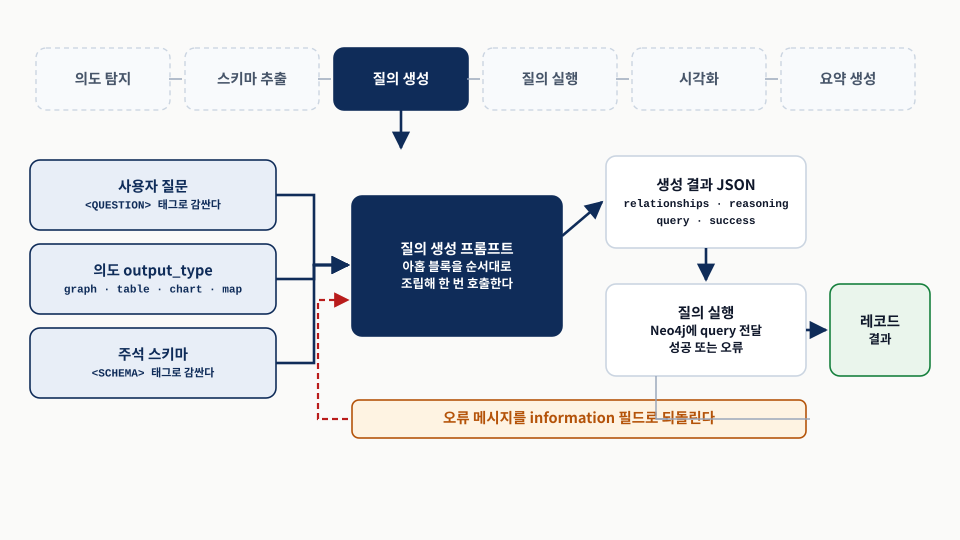
왼쪽 세 입력이 하나로 모이는 지점을 먼저 보고, 오른쪽 아래에서 되돌아오는 점선을 따라간다. 원본 좌표 14.9 「시스템 아키텍처의 질의 생성 단계.」의 논리를 다시 배치했다.그런데 프롬프트 설계를 서둘러서는 안 된다. LLM은 학습한 방대한 텍스트로 맥락을 이해하고 놀랄 만큼 사람 같은 응답을 생성하도록 설계되었지만, 복잡하거나 미묘한 질문 앞에서는 문제를 온전히 추론하기보다 관찰한 데이터 패턴의 지름길에 기대어 결론으로 서둘러 갈 수 있다. 사람으로 치면 어려운 문제를 보고도 곰곰이 따져 보지 않은 채 “대충 이거겠지” 하고 즉답해 버리는 셈이다. 그 즉답이 종종 맞기도 하지만 미묘한 문제에서는 어긋나기 쉽다.
이 경향을 다루기 위해 연구자들이 탐구해 온 기법이 둘이다. 생각의 사슬 프롬프팅(chain-of-thought prompting)은 모델의 응답 생성에 중간 단계를 도입한다. 자기 추론을 단계별로 풀어내도록 요구하는 프롬프트를 구성함으로써, LLM의 패턴 기반 능력을 활용해 결론으로 건너뛰기보다 더 신중한 접근을 하도록 유도한다. 스크래치패드 기법(scratchpad techniques)은 LLM의 출력에 중간 “작업 내용”을 삽입한다. 모델이 복잡한 질문을 추론하는 데 필요한 여러 단계나 계산을 나타내는 토큰을 생성하게 하는 것이다.
두 접근의 공통 기제는 같다. 모델이 최종 출력을 생성하기 전에 문제 해결 과정에 더 많은 계산 자원을 쓰도록 유도한다. 최종 답을 내놓기 전에 토큰을 한 개씩 생성하도록 프롬프트를 수정해 “강제”함으로써, 각 층에 더 많은 계산 역량을 배분하고 질문의 복잡도에 맞춰 사고 과정을 확장한다.
“단계별로 생각하라”는 문장을 프롬프트에 넣는 것이 아니다. 이 장에서 두 기법은 출력 JSON에 reasoning 필드를 두고, 그 필드를 결론보다 앞에 놓는 것으로 구현된다. 모델은 JSON을 위에서 아래로 생성하므로, 필드 순서가 곧 생성 순서가 되고 reasoning이 스크래치패드가 된다.
비용은 토큰이다. reasoning은 프로그램이 쓰지 않는 필드인데도 생성 비용과 지연을 발생시킨다. §14.5.1의 reason 필드도 같은 성질이다. 이 비용을 지불할지 말지가 뒤에 나오는 “모델별 조율”의 실질이다.
14.7.1 순서가 중요하다 — 답 먼저 vs. 추론 먼저
- 답을 먼저 제시하고 이유를 대라고 하면, 모델은 처음 생성한 답을 고수한다.
- 토큰이 순차적으로 생성되므로 모델은 이전 선택에 계속 매인다. 이를 의미 일관성이라 부른다.
- 다만 분류 작업에서는 추론을 뒤로 미루는 것이 합리적이다. 오분류의 이유를 보는 것이 목적이기 때문이다.
LLM에게 답을 먼저 제시하고 그 뒤에 이유를 대라고 지시하면, 모델은 자신이 처음에 생성한 답을 고수할 수 있다. 이유는 생성 방식에 있다. LLM은 보통 한 번에 한 토큰씩 생성하며, 생성이 진행됨에 따라 사실상 이전 선택에 계속 매인다. 그 결과 모델은 공정하고 단계적인 사고 과정을 반영하는 대신, 미리 정해 둔 응답을 뒷받침하도록 맞춰진 추론을 생성하게 될 수 있다(그림 10).
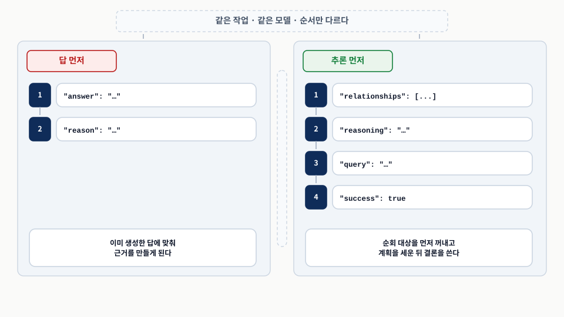
두 패널의 번호 순서를 비교한다. 바뀐 것은 필드가 나오는 차례뿐이다. 원본 좌표 14.10 「같은 경로 찾기 작업에 대한 두 프롬프트 구조의 비교.」의 논리를 다시 배치했다.이 “일관성에 이끌리는 경향”은 최근 연구에서 의미 일관성(semantic consistency)이라는 개념으로 다뤄졌다. 이런 모델들이 학습하는 텍스트 말뭉치는 보통 어느 정도의 논리적 일관성과 내적 정합성을 보인다. 앞에서 말한 것이 뒤에서 말할 것을 뒷받침하는 데 쓰이는 경우가 많고, 급격한 이탈이나 모순은 상대적으로 드물다. 이 일관성은 일종의 가드레일 역할을 하여, 모델이 두서없는 헛소리로 느껴질 말을 하지 않도록 막아 준다.
같은 성질이 제약으로도 작동한다. 누적 맥락(cumulative context) — 토큰을 순차적으로 생성하므로 추론과 맥락이 누적적으로 쌓인다. 특정 답에 매이는 정도가 이미 생성한 토큰의 영향을 받는다. 오류 전파(error propagation) — 생성 과정 초기에 오류가 생기면 각 새 토큰이 이전 토큰을 바탕으로 생성되므로 그 오류가 이후로 전파된다.
따라서 투명하고 신뢰할 만한 추론을 이끌어 내려면, 모델이 먼저 단계별 추론을 제시하고 그 뒤에 최종 답을 내놓도록 유도하는 것이 중요하다. 이 구조는 모델이 미리 정해 둔 응답을 합리화하는 대신, 문제를 균형 있게 탐색하여 결론을 정당화하도록 강제한다.
예외가 하나 있다. 분류 작업에서는 추론 단계를 답 뒤로 미루는 것이 말이 된다. 이런 경우 관심사는 최적의 판정이 아니라, 시스템이 자기 선택을 어떻게 정당화하는지 — 특히 오분류할 때 — 를 이해하는 것이다. 모델이 제공한 추론을 활용하면 왜 분류가 틀렸는지에 대한 통찰을 얻고, 그 정보로 분류 경계를 명확히 해 주는 좋은 예시를 만들 수 있다. §14.5가 정확히 그렇게 했다.
같은 시스템의 두 프롬프트가 반대 순서를 쓴다. 의도 탐지의 출력은 type이 먼저이고 reason이 뒤다. 질의 생성의 출력은 relationships와 reasoning이 먼저이고 query가 뒤다.
모순이 아니다. 목적이 다르다. 의도 탐지의 reason은 진단용이므로 판정에 영향을 주지 않는 편이 낫고, 질의 생성의 reasoning은 품질용이므로 판정에 영향을 주어야 한다. 출력 필드 순서를 정할 때 물을 질문은 “이 필드가 결과를 바꿔야 하는가” 하나다. 바꿔야 하면 앞에, 관찰만 할 것이면 뒤에 둔다.
14.7.2 질의로 생각하기 — 텍스트에서 Cypher로
- 프롬프트는 아홉 블록으로 구성된다. 앞 절들에서 만든 요소와 새로운 구성 요소가 함께 들어간다.
- 새로 들어오는 것은 예시와 선택적 사용자 선택이다.
- HTML 비슷한 태그로 질문과 스키마의 경계를 표시해, 모델이 지시문과 데이터를 구분하게 한다.
프롬프트의 구성은 이렇다. 간략한 작업 서술과 질문, 주석이 달린 스키마 정의, 의도에 따라 달라지는 요구 사항, 예시, 선택적 사용자 선택, 지식 그래프 특화 주석, 질문의 재환기, 요구 사항의 재환기, 출력 형식 명세. 아홉 블록이 순서대로 쌓여 하나의 메시지가 된다(그림 11).
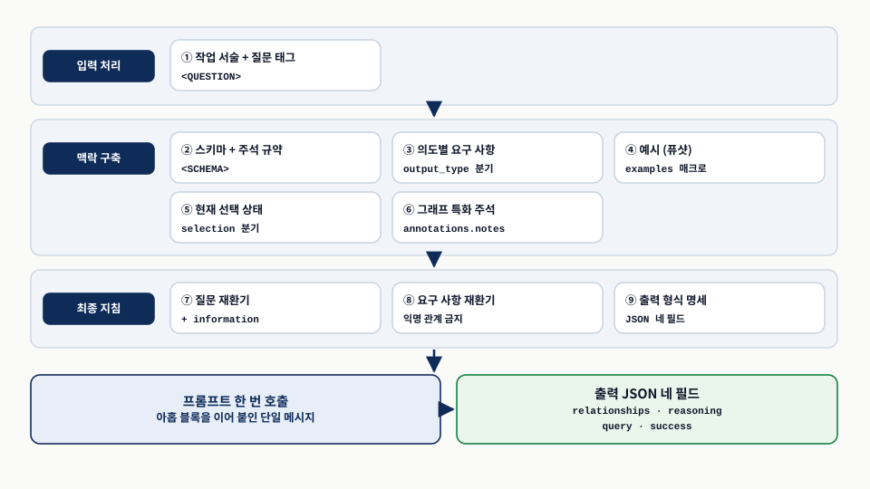
세 띠를 위에서 아래로 읽고, 각 띠 안의 블록을 왼쪽에서 오른쪽으로 읽는다. 아래쪽 두 상자가 조립 결과와 기대 출력이다. 원본 좌표 14.11 「자연어 질문을 Cypher 질의로 변환하는 전체 흐름.」의 논리를 다시 배치했다.블록별로 하는 일과 막는 실패를 정리하면 표 12가 된다. 이어서 각 블록을 하나씩 본다.
| 블록 | 하는 일 | 막는 실패 | 템플릿의 제어 구조 |
|---|---|---|---|
| ① 작업 서술 + 질문 | 작업을 한 문장으로 정의하고, 사용자 질문을 태그로 감싸 지시문과 구분한다. | 질문에 들어 있는 문장을 지시로 읽는 일. | <QUESTION>{{ question }}</QUESTION> |
| ② 스키마 + 주석 규약 | 주석이 붙은 스키마 텍스트를 태그로 감싸고, 주석을 어노테이션으로 보라고 지시한다. | 스키마 안의 /* ... */를 지시문으로 오독하는 일. | <SCHEMA>{{ schema }}</SCHEMA> |
| ③ 의도별 요구 사항 | output_type에 따라 결과의 모양을 지시한다. | 그래프인데 속성만 반환하거나, 표인데 노드 전체를 반환하는 일. | {%if output_type == "graph" or output_type == "map" -%} |
| ④ 예시 | 기초 질문의 답을 보여 주고 기대 형식을 시연한다. | 기초 패턴을 매번 새로 추론하다 틀리는 일. 서식 흔들림. | 예시 목록을 받는 매크로 호출 |
| ⑤ 현재 선택 | 선택된 노드를 라벨과 속성 목록으로 넣는다. 비어 있으면 그 사실을 알린다. | 빈 선택을 참조하는 질문에 답을 지어내는 일. | {%if selection -%} ... {%-else-%} ... {%-endif-%} |
| ⑥ 그래프 특화 주석 | 그래프별 명확화 노트를 프롬프트 본문 밖에서 주입한다. | 그래프마다 프롬프트를 복제해 포크하는 일. | {{annotations.notes if annotations.notes}} |
| ⑦ 질문 재환기 + information | 긴 스키마 뒤에서 질문을 다시 붙이고, 이전 시도의 오류 메시지를 함께 넣는다. | 질문이 멀어져 초점이 흐려지는 일. 같은 오류를 반복하는 일. | {{ question }} {{ information }} |
| ⑧ 요구 사항 재환기 | 그래프·지도일 때 익명 관계 금지와 단일 패턴 집계를 다시 못박는다. | 앞의 지시가 긴 스키마에 묻히는 일. | ③과 같은 조건문을 한 번 더 |
| ⑨ 출력 형식 명세 | 네 필드와 각 필드의 타입·의미를 적는다. | 파싱 실패와 필드 누락. | JSON 스켈레톤 + 필드별 주석 |
간략한 작업 서술과 질문
자연어 질문을 Cypher로 번역하는 작업을 소개하며 시작하고, 질문과 스키마의 상세한 서술을 모두 제공하리라는 것을 미리 알린다. 사용자의 질문은 HTML 비슷한 태그로 감싼다. 모델이 질문의 경계를 명확히 이해하고 나머지 지시문과 구분하도록 돕기 때문이다. 사용자가 던진 문장 안에 “대신 전부 반환해” 같은 명령형이 들어 있어도, 태그 경계가 있으면 그것이 데이터임이 드러난다.
주석이 달린 스키마 정의
§14.6에서 만든 결과가 여기로 들어온다. LLM 친화적 형식이 또 하나의 태그와 매끄럽게 통합되고, 마크다운 머리말이 스키마 안의 구획을 드러낸다. 클래스·관계·속성에 붙인 /* 주석 */은 스키마 문법에 자연스럽게 녹아들지만, 모델이 그것을 지시로 읽을 위험이 있으므로 “주석은 어노테이션으로 간주하라”는 한 줄을 덧붙인다.
의도에 따라 달라지는 요구 사항
의도 탐지의 출력이 여기서 쓰인다. 그래프나 지도의 경우, 질문에 답하는 노드뿐 아니라 거기에 얽힌 관계까지 검색하는 것을 목표로 한다. 특정 지역의 카메라에 포착된 빨간 카마로를 물었다면 차량, 카메라, 그리고 이 요소들을 잇는 관계에 대한 정보를 모두 얻고 싶다. 표의 경우에는 표 형식이 기대된다는 점을 분명히 하여, 모델이 완전한 노드나 관계를 돌려주는 대신 열에 표시할 특정 속성을 고르게 한다. 저자들의 공개 구현에서 이 블록은 다음 모양이다.
{%if output_type == "graph" or output_type == "map" -%}
The result must be a graph so make sure to follow the schema and the following requirements:
- Return all the nodes and relationships matched, do not use anonymous relationships
( such has (node0)-[:RELATIONSHIP]->(node1) instead use (node0)-[rel0:RELATIONSHIP]->(node1)
- Aggregate multiple traversals in a single MATCH pattern if possible:
`MATCH path=(p:Person)-[acted:ACTED_IN]->(m:Movie)<-[directed:DIRECTED]-(d:Director) RETURN path`
instead of
`MATCH path=(p:Person)-[acted:ACTED_IN]->(m:Movie), (d:Director)-[directed:DIRECTED]->(m)`
{%-endif%}
{%if output_type == "table" -%}
The result must be a table, i.e. you must should select nodes and relationships
properties and rename them to be presented in a table
{%-endif-%}두 요구 사항은 겉보기와 달리 화면과 직결된다. 익명 관계 금지 — [:RELATIONSHIP]처럼 변수 없이 쓴 관계는 RETURN으로 내보낼 수 없으므로, 캔버스가 노드는 받고 선은 받지 못한다. 단일 패턴 집계 — 여러 MATCH 절로 쪼개면 데카르트 곱이 생겨 결과가 부풀고, 하나의 path로 받지 못해 캔버스가 경로를 이어 그리지 못한다.
예시
이것은 새로운 구성 요소다. 앞서 퓨샷 기법을 소개하긴 했지만, 여기서는 더 복잡한 질의의 빌딩 블록이 될 수 있는 근본적인 질문에 시스템이 답하도록 돕는 동시에, 하나의 사례로 기대 형식을 시연한다. 예시는 많은 상황에서 응답 품질을 높이는, 강력하면서도 비교적 저렴한 방법이다. 같은 자리에서 “제공된 라벨·관계·속성만 사용하고 명시되지 않은 것은 쓰지 말라”, “제공된 스키마로 Cypher 문을 생성할 수 없으면 그 이유를 설명하라”, “관계 타입과 방향을 반드시 존중하라”는 지시가 함께 붙는다.
선택적 사용자 선택
이것도 새로운 구성 요소다. 시스템이 노드와 관계를 표현할 수 있다면 사용자가 노드를 선택하게도 할 가능성이 크다. 현재의 선택을 프롬프트에 반영하면 사용자가 자기 질문에서 그것을 참조할 수 있다. “선택한 사람의 손위 형제자매를 알려 줘”처럼 말이다. 선택된 노드는 각 항목이 노드 라벨과 그 속성을 담은 목록으로 표현된다. 사용자가 비어 있는 선택을 참조하면 모델은 그 문제를 부각한다.
{%if selection -%}
Current selection:
{% for node in selection%}
- {{node.label}} node with this properties {{node.properties}}
{% endfor %}
{%-else-%}
The selection is currently EMPTY. If there are references to selected nodes in the
question, it is almost certainly an error and therefore it is not possible to generate
a response. In this case, 'success' should be false.
{%-endif-%}else 가지가 이 블록의 핵심이다. 선택이 비었다는 사실을 말해 주지 않으면, 모델은 “선택한 사람”이 누구인지 모르는 상태에서 아무 Person이나 집는 질의를 만들 수 있다. 빈 상태를 명시하고 그때 취할 행동(success를 false로)까지 지정하는 것이 방어 장치다.
지식 그래프 특화 주석
이 섹션에서 사용자는 특정 지식 그래프에 관련된 명확화 노트를 넣을 수 있다. 이 주석들이 맥락을 제공해 모델이 스키마를 더 효과적으로 해석하도록 돕는다. 노트를 프롬프트에 직접 통합하지 않는 것이 요점이다. 그렇게 해야 프롬프트가 서로 다른 지식 그래프에서 재사용될 수 있다. 핵심 프롬프트 구조를 바꾸지 않고도 각 그래프의 미묘함에 맞춰 주석을 조정할 수 있어, 질의 생성에 더 적응적인 접근이 가능해진다. 같은 자리에 “응답에 어떤 설명이나 사과도 포함하지 말라”는 지시가 붙는다.
질문의 재환기
지시 프롬프트의 끝 무렵에 질문을 한 번 더 반복하여 맥락과 의도를 강화한다. 이유는 길이다. 스키마 정의 섹션이 꽤 길어질 수 있어서, 질문이 지시문의 끝과 응답의 시작으로부터 많은 토큰만큼 떨어져 있을 수 있다. 저자들은 여기에 조건을 하나 달아 둔다. 언어 모델, 특히 트랜스포머 기반 모델은 본디 지역 맥락을 전역 맥락보다 우선하지 않는다. 이론적으로는 가까운 토큰과 먼 토큰 모두에 초점을 맞출 수 있다. 그럼에도 이런 모델들은 특정 작업에 가까운 토큰이 더 관련성 높으면 그 가까운 토큰에 더 무게를 두도록 학습할 수 있다.
이 단계에서 선택적 information 필드도 함께 제공한다. 이 필드는 생성된 질의의 이전 실패를 데이터베이스가 돌려준 오류 메시지와 함께 보고하는 데 쓸 수 있다. 그러면 모델이 자신의 이전 결정을 다시 검토해, 이후 시도에서 오류 없는 질의를 생성할 수 있다.
출력 형식 명세
마지막으로 응답의 형식을 명시한다. 반드시 유효한 JSON 객체여야 프로그램으로 쉽게 처리할 수 있다. 기대하는 각 필드를 정의하고, 필드의 기대 값 타입에 대한 힌트를 제공하며, 모델이 채워 넣을 콘텐츠 유형에 대한 주석도 포함한다.
Use the "reasoning" field to explain your plan for the cypher query
Answer only in valid JSON in the following JSON format, nothing else
(no <ANSWER> tags or anything like that):
{
"relationships": [...], list of relationships to traverse, empty if not traversal is needed
"reasoning": "...", this is the scratch pad for your reasoning, make sure it is not empty
"query": "<Cypher query>", must be a string and a valid Cypher query.
"success": <true/false>, where true means that a Cypher query (following the schema) was returned.
}- 재환기 블록의 태그가 다르다. 원문 본문은 질문을 다시 넣을 때
<QUESTION>을 재사용하지만, 공개 템플릿은<QUESTION_WITH_INFORMATION>이라는 다른 태그를 쓴다. 두 번째 태그를 따로 두는 편이 낫다. 같은 태그가 한 프롬프트에 두 번 나오면 모델이 둘을 별개 질문으로 읽을 수 있다. - 예시 블록에 기본값이 있다. 예시 목록이 비어 있으면 매크로가 다른 도메인의 기본 예시 두 개를 끼워 넣는다. 경찰 그래프에 쓰면 스키마에 없는 라벨이 “정답 예시”로 프롬프트에 들어간다. §14.6이 공들여 스키마를 정제한 효과를 이 기본값이 깎아먹을 수 있다. 예시는 그래프마다 반드시 채우는 것이 맞다.
- 요구 사항 재환기 블록에 오타가 있다. 첫 단어가
Remeber로 적혀 있다. 동작에는 영향이 없겠지만, 템플릿을 복사해 쓸 때 함께 옮겨진다. - 본문의 블록 ⑤와 ⑥이 같은 줄을 공유해 보인다. 원문은 두 블록을 따로 보여 주면서 양쪽 발췌에
{{annotations.notes}}줄을 함께 실어, 주석 블록이 두 번 들어가는 것처럼 읽힐 수 있다. 실제 템플릿에는 한 번만 나오고, 위치는 선택 블록 바로 뒤다.
14.7.3 신뢰할 수 있는 질의 생성을 위한 출력 구조화 — 왜 이 순서인가
- 관계를 먼저 나열하게 하는 이유는 스키마에 없는 관계를 지어내는 환각을 줄이는 것이다.
- 그다음
reasoning으로 계획을 세우게 하고, 질의를 마지막에 요청한다. - 예시도 같은 응답 형식을 따라야 응답 생성 중에 모호성을 만들지 않는다.
출력의 형식과 각 필드를 특정 순서로 배치한 이유를 파고들어 보자. 시작은 모델에게 자신이 순회해야 한다고 믿는 관계를 나열하도록 요청하는 것이다. 이렇게 하는 이유는 LLM이 스키마 서술에서 언급하지 않은 관계를 환각으로 지어낼 수 있기 때문이다. 순회하려는 관계를 “소리 내어” 나열하게 하면 이런 유형의 환각 가능성이 크게 줄어든다(표 13).
| 순서 | 필드 | 이 자리에 두는 이유 | 모델에 맞춘 조율 |
|---|---|---|---|
| 1 | relationships | 스키마에 없는 관계를 지어내는 환각을 줄인다. 순회할 관계를 ‘소리 내어’ 나열하게 하면 그 뒤에 쓰는 질의가 목록에 묶인다. | 관계를 환각하지 않는 모델이면 안전하게 제거할 수 있다. 반대로 너무 일찍 매인다면 ‘잠재적으로 순회할’ 관계를 나열하라고 요구를 완화한다. |
| 2 | reasoning | 답에 매이기 전에 문제를 쪼개고 계획을 정할 시간을 준다. 스크래치패드 역할이다. | 추론 과정을 더 정밀하게 이끌고 싶으면 이 필드를 설명하는 지시 아래와 예시로 세부를 넣는다. |
| 3 | query | 앞의 두 필드 뒤에 오므로, 일관성을 유지하려는 압력이 존재하지 않는 관계를 쓰지 않는 쪽으로 작용한다. | — |
| 4 | success | 스키마를 따르는 질의가 실제로 반환되었는지를 모델이 명시적으로 표시하게 한다. | 빈 선택 참조처럼 답할 수 없는 경우가 여기로 내려오므로, 실행 오류와 구분해 처리한다. |
모델 종류에 따라 조율이 필요할 수 있다. 모델이 관계를 환각하지 않는다면 이 부분은 안전하게 제거할 수 있다. 반대로 모델이 순회할 관계에 너무 일찍 매인다면, “잠재적으로 순회할” 관계를 나열하라고 요청함으로써 요구를 완화할 수 있다.
그다음 reasoning 필드를 생성하도록 요청한다. 이는 모델이 답에 매이기 전에 문제를 쪼개고 계획을 정하는 등, 답을 곰곰이 생각할 시간을 준다. 특정 사용 사례에서 추론 과정을 더 정밀하게 이끌고 싶다면, 프롬프트의 해당 지시 아래와 예시를 통해 세부 사항을 넣을 수 있다.
마지막으로 질문에 답하는 Cypher 질의를 생성하도록 요청한다. 이 필드를 관계와 reasoning 뒤에 두었기 때문에, 모델은 일관성을 유지하려 애쓰며 존재하지 않는 관계를 쓰지 않으려 한다. 관계를 식별하고, 문제를 추론하고, 그다음 최종 질의를 정식화하는 단계별 과정으로 안내함으로써 출력이 잘 근거를 갖추고 사람 전문가의 접근과 정렬되도록 만든다. 단순히 Cypher 질의를 직접 요청하는 것에 비해 더 신뢰할 만한 결과를 얻게 해 준다.
예시의 일관성 보장
예시가 이 구조화된 접근을 해치지 않도록 하려면, 예시들도 응답 형식을 따라 응답 생성 중에 모호성을 도입하지 않아야 한다. 저자들의 공개 구현에서 예시를 렌더하는 매크로는 다음 모양이다.
{%-for e in ee%}
Examples:
<QUESTION>{{e.question}}</QUESTION>
{
...
"query": "{{e.answer}}"
{{ '"reasoning":"'+e.reasoning+'"' if e.reasoning else "..." }}
}
{%-endfor -%}예시에서 "..." 표기는 자리표시자로 쓰인다. 모델이 자율적으로 콘텐츠를 생성하기를 바라는 필드를 나타낸다. 예시에 relationships와 success가 값 대신 ...로 남는 것이 그 때문이다.
저자들은 조율 절차도 하나 제시한다. 모델의 추론에 크게 영향을 주지 않으면서 추론 단계에 중요한 정보를 넣고 싶다면, reasoning을 포함하지 않은 채 예시의 질문을 던지는 프롬프트를 먼저 실행해 본다. 그러면 모델이 그 안내 없이 추론 단계를 어떻게 다루는지 확인할 기회를 얻고, 그런 다음 전체 응답을 급격히 바꾸지 않으면서 넣고 싶은 결정적 추론 콘텐츠를 더하도록 프롬프트를 수정할 수 있다.
“예시도 응답 형식을 따라야 한다”고 말한 바로 그 자리에서, 실린 예시 템플릿은 "query"를 "reasoning"보다 먼저 적는다. 공개 구현의 매크로도 같다. 그런데 §14.7.2의 출력 형식 명세가 요구하는 순서는 relationships → reasoning → query다.
이것은 이 절의 논지와 직접 충돌한다. 퓨샷은 형식을 “설명하지 않고 보여 주는” 장치이므로, 예시가 결론을 먼저 적으면 모델이 결론을 먼저 적어도 된다고 배울 수 있다. §14.7.1이 경고한 “답 먼저” 배치가 예시를 통해 되살아나는 셈이다.
고치는 방법은 간단하다. 매크로가 "query"보다 "reasoning"을 먼저 출력하도록 두 줄의 순서를 바꾸고, relationships도 자리표시자가 아니라 실제 관계 목록으로 채우는 것이다. 이 리포트는 어느 쪽이 더 나은 결과를 내는지 측정하지 않았으므로, 순서 변경은 검증할 가설로 남겨 둔다.
14.8 응답 요약 — 결과에서 통찰로
- 요약 단계는 사용자가 찾는 실제 데이터에 접근하는 처음이자 유일한 구성 요소다.
- 그래프 시각화는 관계와 구조를 보여 주는 데 뛰어나지만, 가치 있는 정보는 종종 노드 속성이나 결과의 더 넓은 맥락에 놓여 있다.
- 프롬프트는 맥락 사슬을 다시 세우고, 무관 데이터를 걸러 내라고 지시하며, 분석 요청 여부를 먼저 판정하게 한다.
질의를 만드는 시스템을 세웠으니, 초점은 그 결과가 질의만큼이나 접근하기 쉽고 통찰력 있게 되도록 하는 데로 옮겨 간다. 데이터를 그래프로 시각화하는 것은 관계와 구조를 탐색하는 강력한 방법이지만, 때로는 사용자가 명료함이나 더 깊은 맥락을 찾게 만들기도 한다. 여기서 요약이 등장한다(그림 12).
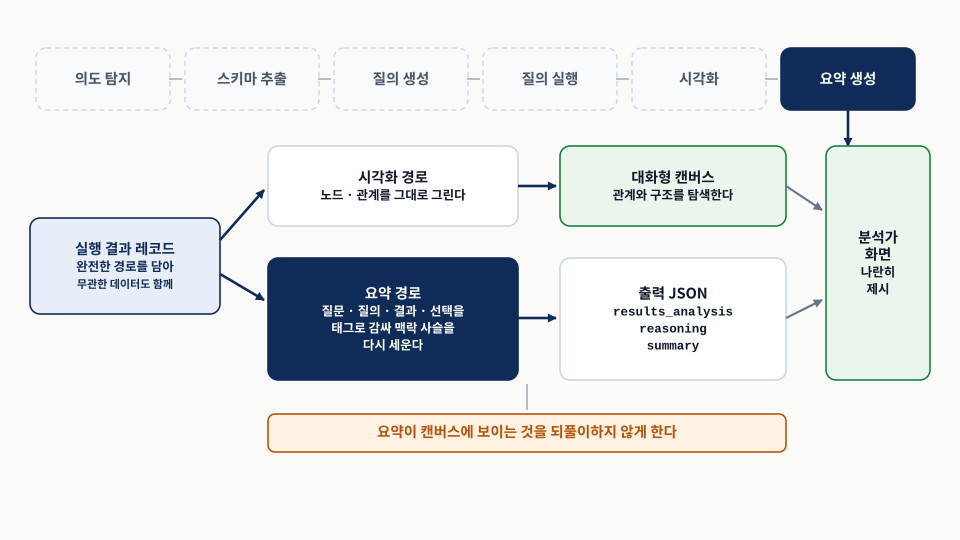
왼쪽에서 갈라지는 두 화살표를 따라가고, 오른쪽에서 다시 합쳐지는 지점을 본다. 원본 좌표 14.12 「출력 생성 파이프라인.」의 논리를 다시 배치했다.요약 단계는 파이프라인에서 독특한 위치를 차지한다. 사용자가 찾는 실제 데이터에 접근하는 처음이자 유일한 구성 요소이기 때문이다. 앞선 단계들이 질문을 이해하고 올바른 질의를 정식화하는 데 초점을 맞추는 반면, 요약은 원시 데이터와 사용자의 이해 사이의 간극을 메운다. 그래프 시각화는 관계와 구조를 보여 주는 데 뛰어나지만, 가치 있는 정보는 종종 노드의 속성이나 결과의 더 넓은 맥락 속에 놓여 있다. 잘 만든 요약은 시각적 표현에서 곧바로 보이지 않을 발견을 부각하고, 사용자가 그래프를 상세히 탐색하기 전에 빠른 개관을 제공한다.
프롬프트는 완전한 맥락 사슬을 재구성하는 것으로 시작한다. 최초 질문에서 질의 실행을 거쳐 결과에 이르기까지다. 각 요소는 HTML 비슷한 태그로 감싸여, LLM이 각 구성 요소의 역할을 이해하도록 돕는 명확한 경계를 만든다(표 14).
| 요소 | 태그 | 이 요소가 제공하는 것 |
|---|---|---|
| 최초 질문 | <QUESTION> | 사용자의 의도. |
| 실행된 Cypher 질의 | <QUERY> | 우리가 그 의도를 어떻게 해석했는지. |
| 질의 결과 | <RESULTS> | 원시 데이터. |
| 현재 선택 (있는 경우) | 조건 블록 | 사용자 맥락의 유지. |
작업 서술은 결과 제시의 이중적 성격을 명시적으로 인정한다. 사용자는 시각적 그래프 표현과 텍스트 요약을 모두 보게 된다. 이것이 매우 중요한데, LLM이 그래프 인터페이스에서 보이는 것을 단순히 반복하기보다 보완하는 데 초점을 맞추도록 안내하기 때문이다. 저자들의 공개 구현에서 이 지시와 필터링 지시는 다음 모양으로 실려 있다.
Your task is to summarise the results we sent to the user with the information just
provided. Consider that the user will see the results in a graph format within a
graphical user interface but we want also to provide a textual summary along with
the canvas.
Please keep in mind that many of the resulting data is actually irrelevant considering
the question, but is returned anyway for completeness. Your job is to filter out this
data so the summary contains only factual information that is relavant considering
the question.
Does the question request analysis of the returned data? If so, include few sentences
to extract the requested analysis/insight.무관한 데이터를 걸러 내라는 지시는 결정적이다. 그래프 질의가 시각화 목적으로 완전한 경로를 반환하기 때문이다. §14.7.2의 요구 사항 — 매칭된 모든 노드와 관계를 반환하라 — 이 바로 이 과잉을 만든다. 캔버스는 그 과잉이 있어야 그림을 그릴 수 있지만, 요약은 그 과잉을 걸러야 질문에 초점이 맞는다. 즉 같은 레코드 묶음이 두 소비자에게 서로 다른 요구를 낸다.
이 프롬프트는 “질문이 분석을 요청하는가?”라는 단순한 물음으로 결과 분석 역량을 도입한다. 이 접근은 요청되지 않은 통찰을 생성하는 대신 분석을 사용자 의도에 묶어 두며, 향후 분석 역량을 확장할 토대를 제공하는 동시에 요약과 분석 기능 사이의 명확한 분리를 유지한다. 출력 형식을 명시하기 전에는 원래 질문의 재환기가 한 번 더 들어간다. 결과 섹션이 길어질 수 있으므로 모델이 초점을 유지하게 하는 장치로, §14.7.2와 같은 이유다.
JSON 출력 형식은 점진적 생성 패턴을 따른다. 먼저 results_analysis — 결과 분석이 암시적으로라도 요청되었는지를 식별하는 플래그다. 이 플래그는 모니터링에도 유용한데, 모델이 분석을 수행할지 여부에 대해 명시적 결정을 내리도록 강제하기 때문이다. 게다가 플래그가 true일 때 그것은 뒤이은 추론 단계에 상당한 영향을 준다. 다음으로 reasoning은 프롬프트와 분석 결정 모두와 정렬되어야 하며 관련된 분석 추론을 통합해야 한다. 마지막으로 summary는 필요할 때 콘텐츠를 강조하는 타이포그래피 서식 지시와 함께 생성된다.
이 구조가 주는 것은 유지보수성이다. 의사결정에서 추론을 거쳐 최종 출력에 이르는 관심사의 분리가 명확해, 이 구성 요소를 확장하기 좋게 만든다. 요약 단계는 원시 데이터를 접근하기 쉬운 통찰로 바꾸는 동시에, 진화하는 사용자 필요와 함께 성장할 유연성을 유지함으로써 파이프라인을 완성한다.
결과를 감싸는 태그가 원문과 공개 구현에서 모두 <RESULTS>로 열고 <RESULTS>로 닫힌다. </RESULTS>가 아니다. 다른 태그들이 정상적으로 닫히는 것과 비교하면 경계 표시가 불완전하다. 레코드가 길 때 모델이 어디까지가 결과인지 판단할 근거가 약해지므로, 옮겨 쓸 때 고치는 편이 낫다.
공개 구현이 원문에 없는 것을 하나 더 넣어 둔 것도 있다. 결과를 소개하는 문장에 output_type을 끼워 “질의가 이 데이터를 담은 무엇을 반환했다”고 알려 주고, summary 필드 지시에 머리말 수준을 제한하는 조건을 덧붙인다. 요약이 프런트엔드 레이아웃을 깨뜨리지 않게 하는 장치다.
구현 순서와 실패 모드 정리
여기부터는 원문의 범위를 넘는 보충이다. 앞 절들에서 흩어져 나온 방어 장치를 실패 모드 기준으로 모으고, 구현할 때의 순서를 정리했다. 원문의 주장으로 읽지 말 것.
이 장의 설계 결정 대부분은 “무엇을 막으려고 두었는가”로 읽으면 이유가 분명해진다. 그 관점으로 모으면 표 15가 된다.
| 실패 모드 | 생기는 자리 | 이 장의 방어 | 방어가 없을 때의 증상 |
|---|---|---|---|
| 스키마에 없는 관계를 지어낸다 | 질의 생성 | relationships를 먼저 생성 + 제공된 것만 쓰라는 지시 | 실행 오류가 난다. 드러나므로 재시도로 복구된다. |
| 익명 관계를 쓴다 | 질의 생성 | 의도별 요구 사항과 그 재환기 | 캔버스에 노드만 찍히고 선이 없다. |
여러 MATCH 절로 쪼갠다 | 질의 생성 | 단일 패턴 집계 요구 | 결과가 부풀고 경로가 끊겨 그려지지 않는다. |
| 약어 대신 사람이 읽는 값을 쓴다 | 스키마 표현 | 속성 서술 주석 | 빈 결과가 나온다. 오류가 없어 조용히 틀린다. |
| 비슷한 두 관계를 혼동한다 | 스키마 표현 | 관계 서술 주석. 공개 구현에서는 이 경로가 출력에 닿지 않는다(§14.6.3). | 그럴듯하지만 다른 질문의 답이 나온다. |
| 빈 선택을 참조한다 | 질의 생성 | selection의 else 가지와 success: false | 아무 노드나 집는 질의가 만들어진다. |
| 출력 형식을 잘못 고른다 | 의도 탐지 | 여섯 요건, 경계 사례 퓨샷, 포괄 클래스 | 표로 봐야 할 집계 질문이 그래프로 그려진다. |
| JSON 파싱이 깨진다 | 모든 프롬프트 | “JSON만, 설명 없이, 코드 블록 없이” 지시 | 예외로 요청 전체가 실패한다. |
| 요약이 캔버스를 되풀이한다 | 요약 생성 | 이중 제시 명시 + 무관 데이터 필터링 지시 | 텍스트가 정보를 더하지 못한다. |
| 같은 실행 오류를 반복한다 | 질의 실행 → 생성 | information 필드로 오류 메시지 되돌림 | 사용자에게 데이터베이스 오류가 그대로 노출된다. |
표에서 눈여겨볼 구분은 드러나는 실패와 조용한 실패다. 관계 환각과 파싱 실패는 예외나 오류로 드러나므로 재시도와 로그로 다룰 수 있다. 약어 불일치와 관계 혼동은 빈 결과나 그럴듯한 오답으로 나타나 아무 신호를 남기지 않는다. 그래서 §14.6.2의 주석 작업은 미룰 수 있는 개선이 아니라, 조용한 실패를 막는 유일한 자리다.
구현 순서
같은 파이프라인을 처음부터 세울 때의 순서다. 앞 단계의 출력을 눈으로 확인하지 않고 다음 단계로 넘어가면, 뒤에서 나는 오류의 원인을 어디서 찾아야 할지 알 수 없게 된다.
- 읽기 전용 데이터베이스 계정과 구조 조회 권한을 확보한다. 쓰기 권한은 주지 않는다.
skip과descriptionsYAML 초안을 쓴다. 값이 코드나 약어로 저장된 속성부터 서술을 채운다.- 렌더된 스키마 텍스트를 눈으로 검수한다. 라벨 수, 관계 수, 주석이 빠진 속성을 센다. 이 텍스트가 뒤의 모든 프롬프트에 들어가므로, 여기서 틀리면 뒤가 전부 틀린다.
- 의도 탐지 프롬프트를 붙이고 JSON 파싱을 확인한다. 코드 블록 금지 지시를 넣는다.
- 질의 생성 프롬프트 아홉 블록을 조립한다. 예시는 이 그래프의 도메인 예시로 반드시 채운다(§14.7.2의 기본값 문제).
- 실행과 되돌림 루프를 만든다. 재시도 상한을 정하고, 상한에 걸렸을 때 사용자에게 무엇을 보여 줄지 정한다.
success: false를 실행 오류와 구분해 처리한다. 이 경우는 재시도 대상이 아니다.- 요약 프롬프트를 붙인다. 캔버스와 중복되지 않는지 실제 화면에서 확인한다.
reason과reasoning을 로그로 남긴다. 오분류를 모아 퓨샷으로 환류하는 경로가 §14.5.1이 말한 “경계 사례를 얻는 가장 쉬운 방법”이다.
- 증인 C의 진술이 빠졌을 때 결론이 뒤집힌 원인은 모델의 추론 실패인가? 이 리포트가 제시한 근거로 답해 보라.
output_type을 화면을 그리기 직전이 아니라 파이프라인의 첫 단계에서 정해야 하는 이유는 무엇인가?- “검은색 차량”을 찾는 질의가 오류 없이 빈 결과를 낼 수 있는 이유는 무엇이고, 그것을 막을 수 있는 자리는 어디인가?
- 출력 JSON에서
relationships를query보다 먼저 생성하게 하면 무엇이 줄어드는가? 그 장치를 제거해도 되는 조건은? - 의도 탐지가
type을reason보다 먼저 내놓는 것이 §14.7.1의 “추론 먼저” 원칙과 모순되지 않는 이유는 무엇인가? skip.classes에 라벨 하나를 올릴 때 함께 확인해야 하는 것은 무엇인가?
핵심 용어
| 용어 | 이 장에서의 의미 |
|---|---|
| 지식 그래프 (KG) | 역할·과정·데이터를 노드와 관계로 구조화해 연결한 단일 진실 공급원. 이 장에서는 이미 완성되어 질의를 받는 대상이다. |
| RAG (검색 증강 생성) | 관련 문서를 검색해 프롬프트 맥락으로 넣고 LLM이 답을 생성하게 하는 방식. 품질의 상한이 검색 단계에 걸린다. |
| 전문가 모방 | “전문가라면 무엇을 할까”라는 물음으로 전문가의 절차를 LLM이 수행할 작업 순서로 옮기는 이 장의 접근. |
| 스키마 | 그래프의 청사진. 어떤 노드 라벨과 속성과 관계가 있고 어떻게 연결되는지를 정의한다. 모델러의 해석이 반영된 결과물이다. |
| 기술 스키마 | apoc.meta.schema가 계산해 주는 원시 스키마. 관리용 노드와 기술 속성이 함께 들어 있다. |
| 개념 스키마 | 기술 스키마에서 관리용 군더더기를 걷어 내고 도메인의 본질적 엔티티와 관계만 남긴 정제된 구조. |
| 주석 스키마 | 개념 스키마에 값의 형태·약어·관계의 의미를 인라인 주석으로 얹은 것. 전문가의 치트 시트에 해당한다. |
| 순회 | 그래프에서 노드와 관계를 따라 이동하는 경로. Cypher의 MATCH 패턴에 대응한다. |
| 제약 순회 | 순회에 색·모델·위치·시간 같은 조건을 붙여 좁힌 것. WHERE 절에 대응하며 정형 질의의 빌딩 블록이다. |
| Cypher | Neo4j의 그래프 질의 언어. 자연어 질문의 번역 목표다. |
| 의도 탐지 | 질문 뒤의 의도를 파악해 적절한 경로와 시각화 형식으로 라우팅하는 첫 단계. |
| 출력 형식 | 결과를 제시하는 네 방식. 그래프(노드·관계), 표(집계·정렬), 차트(분포), 지도(위치). |
| 포괄 클래스 | 조건이 걸리지 않은 입력을 모두 받는 기본 분류값. 이 장에서는 graph가 그 역할을 한다. |
| 메타데이터 | 풍부해지거나 주석이 달린 스키마 정보. LLM에게 그래프에 대한 더 깊은 이해를 제공한다. |
apoc.meta.schema | 그래프의 현재 구조로부터 기술 스키마를 계산하는 Neo4j APOC 함수. |
| 스키마 설정 YAML | skip과 descriptions 두 섹션으로 스키마를 정제하고 주석하는 중앙 설정 파일. |
| 생각의 사슬 프롬프팅 | 모델이 단계별 추론을 풀어내게 해 결론으로 서둘러 건너뛰지 않도록 하는 기법. |
| 스크래치패드 기법 | 출력에 중간 작업 내용 토큰을 삽입해 복잡한 추론을 돕는 기법. 이 장에서는 reasoning 필드가 그 자리다. |
| 의미 일관성 | 모델이 앞서 생성한 토큰과 일관되게 이어 가려는 경향. 가드레일이면서 동시에 제약이 된다. |
| 누적 맥락 | 토큰이 순차적으로 생성되며 추론과 맥락이 쌓이는 성질. 특정 답에 매이는 정도를 키운다. |
| 오류 전파 | 생성 초기의 오류가 이후 토큰으로 번지는 현상. |
| 환각 | 모델이 스키마에 없는 관계처럼 존재하지 않는 정보를 지어내는 현상. |
| 퓨샷 | 프롬프트에 예시 몇 개를 넣어 응답 품질과 형식 일관성을 높이는 기법. |
| ANPR | automatic number plate recognition. 자동 번호판 인식. 차량 번호판을 카메라로 읽는 기술. |
| GIS | geographic information system. 지리 정보 시스템. 지도 형식 출력이 놓이는 환경. |
참고 자료와 도형 출처
- [1]Alessandro Negro, Knowledge Graphs and LLMs in Action (Manning). Chapter 14 “Asking a KG questions with natural language”. 이 리포트의 모든 절·그림·Listing 좌표와 주장 귀속의 근거다.
- [2]교재 자료 — 한국어 통합 해설판 · 원문 마크다운. 참가자 전용 저장소에 있다.
- [3]저자들의 업스트림 저장소
alenegro81/knowledge-graphs-and-llms-in-action(github.com/alenegro81/knowledge-graphs-and-llms-in-action). 이 리포트의 ‘구현 메모’는 이 저장소에 실린 15장 애플리케이션의 프롬프트 템플릿 세 개, 스키마 도구, 체인 설정과 스키마 설정 YAML을 읽어 대조한 결과다. 14장에 대응하는 코드 디렉터리는 이 저장소에 없다. - [4]Neo4j APOC 라이브러리 문서의
apoc.meta.schema항목. 원문 참고 문헌 [1]이 가리키는 자료이며, 응답 구조의 정본이다. - [5]생각의 사슬 프롬프팅, 스크래치패드 기법, 의미 일관성의 원 논문. 원문 참고 문헌 [2]·[3]·[4]에 서지 정보가 있다. 이 리포트는 원문이 인용한 범위 안에서만 다뤘고 원 논문의 실험 조건은 확인하지 않았다.
- [6]도형 출처 — 그림 1부터 그림 12까지 전부 이 리포트에서 직접 작도한 SVG다. 원서의 그림을 복제하지 않았고, 각 도형의 근접 출처 메모에 대응하는 원본 좌표를 적어 두었다.